이미지를 이미지 모양 그대로
— 합성곱 신경망
이 자료는 합성곱 신경망 교안 한 권을 끝까지 담았습니다
"P1–P4의 신경망은 MNIST 28×28 이미지를 784개 숫자 한 줄로 펴서 넣었습니다. 이미지를 펴지 않고 가로·세로 모양 그대로 다루면 무엇이 달라지고, 그 계산은 어떻게 할까?"
컴퓨터 비전 과제, 인식이 어려운 이유, 흑백·컬러 이미지 표현, CNN 구조, 완전연결 계층의 한계
합성곱 계산, 편향, 패딩, 스트라이드, 출력 크기 공식, 3차원 합성곱, 블록으로 보기, 풀링
층이 깊어지며 바뀌는 특징, 사람 뇌의 시각 체계
ImageNet 대회, LeNet, AlexNet, VGGNet, ResNet
전체 정리, 용어, 교안 확인 필요, 예상 문제(계산 문항 포함), 단어장
이 교안에는 목차 쪽이 없어 Part 구분은 내용에 따라 나눈 것입니다. 마지막 두 쪽(Thank You, References)은 내용이 없어 뺐습니다.
왜 배우고, 어디에 힘을 줄까
합성곱 신경망Convolutional Neural Network, CNN은 이미지 인식의 기본 모델입니다. 이 교안은 완전연결 계층 대신 합성곱 계층과 풀링 계층을 쓰는 이유와, 그 두 계층이 숫자를 어떻게 계산하는지를 다룹니다.
| 구분 (추측) | 교안 쪽 | 섹션 | 무엇을 할 수 있으면 되나 |
|---|---|---|---|
| 정의 | 1–10 | 01–05 | 분류·검출·분할의 차이, 흑백 = 2차원 배열(0~255), 컬러 = 3채널. 완전연결 계층은 평탄화하면서 공간 정보를 잃음 |
| 계산 | 11–16 | 06–10 | 합성곱 한 칸 = 같은 자리끼리 곱해 모두 더함, 편향은 모든 칸에 더함, 패딩·스트라이드를 넣은 결과 |
| 계산 | 17–24 | 11–14 | 출력 크기 OH = H + 2P − FHS + 1, 3차원 합성곱의 채널 합, 블록 모양, 매개변수 수, 최대 풀링 |
| 그림 읽기 | 25–27 | 15–16 | 앞층은 에지·블롭, 깊은 층은 물체 부분 — 층이 깊을수록 추상적 |
| 비교 | 28–39 | 17–21 | LeNet · AlexNet · VGGNet · ResNet의 층 구성과 무엇이 새로웠나(ReLU, 3×3 필터, 잔차 블록) |
기말 정보(사용자 확인): 범위는 퍼셉트론 교안부터, 계산 문제는 대체로 없을 예정이었으나 역전파 계산은 반드시 나온다고 하셨습니다(P3, 11.12 · 11.19 수업). 그래서 이 교안의 계산(합성곱 한 칸, 출력 크기, 채널 합, 풀링, 매개변수 수)도 나올 수 있다고 보고 단계별로 따라가는 장을 넣었습니다 (추측). 이 교안에 대한 교수님 말씀은 아직 없습니다.
미리 짚고 갈 개념 ① — P1–P4에서 가져올 것
| 가져올 개념 | 기억할 내용 | 이 교안에서 쓰는 곳 |
|---|---|---|
| 완전연결 · Affine 계층 (P1 18, P3 12) | a = xW + b. 앞층의 모든 뉴런이 다음 층의 모든 뉴런과 연결됨 | 8쪽 FC 신경망, 10쪽 한계 (→ 04, 05) |
| ReLU · 소프트맥스 (P1 16 · 22) | ReLU = max(0, x). 소프트맥스 = 출력을 합이 1인 확률로 | CNN에도 그대로 들어감 (→ 04) |
| MNIST 784 (P2 19 · 21) | 28×28 손글씨 이미지를 784(= 28 × 28)개 값 한 줄로 펴서 입력 | 평탄화와 그 문제 (→ 05) |
| 배치 처리 (P1 23) | 입력 X 모양 100×784 = 이미지 100장을 한 번에 | 4차원 모양 (N, C, H, W) (→ 13) |
| 가중치 · 편향의 학습 (P2, P3) | 기울기를 역전파로 구해 W, b를 갱신 | 필터 = 학습되는 가중치 (→ 08) |
| He 초기값 · 배치 정규화 · 드롭아웃 (P4 15 · 17–20 · 23) | ReLU용 초기값, 미니배치 정규화, 훈련 때 뉴런 끄기 | AlexNet · VGG · ResNet (→ 19–21) |
| 과적합 (중간 범위, P4 21) | 훈련 데이터에만 지나치게 맞음 | 매개변수가 많을수록 위험 (→ 05) |
미리 짚고 갈 개념 ② — 텐서와 모양 (C, H, W) · (N, C, H, W)
텐서tensor: 숫자를 여러 방향으로 늘어놓은 배열 (보충). 방향의 개수를 차원이라고 합니다.
| 차원 | 예 | 모양 |
|---|---|---|
| 1차원 | MNIST 이미지 한 장을 편 것 | (784) |
| 2차원 | 흑백 이미지 (세로 H, 가로 W) | (H, W) |
| 3차원 | 컬러 이미지: 채널 3장 | (C, H, W) |
| 4차원 | 이미지 N장 묶음(배치) | (N, C, H, W) |
C = 채널channel 수, H = 높이height, W = 너비width, N = 배치 크기.
교안 7쪽은 컬러 이미지를 H × W × 3(채널이 마지막)으로 쓰고, 20쪽부터는 (C, H, W)(채널이 처음)로 씁니다. 20쪽에 "(channels, height, width) 형식을 쓰겠다"고 밝혀 두었습니다. 계산 문제에서는 20쪽 형식 (C, H, W)를 기준으로 읽으면 됩니다 (추측).
예 (보충): MNIST 100장 묶음 = (100, 1, 28, 28). 흑백이라 C = 1입니다. 컬러 224×224 이미지 한 장 = (3, 224, 224).
원소 수는 모양의 숫자를 모두 곱한 것: (3, 224, 224) → 3 × 224 × 224 = 150,528개. Python 검산.
미리 짚고 갈 개념 ③ — 원소별 곱의 합 · 평탄화
원소별 곱의 합 (보충): 모양이 같은 두 배열에서 같은 자리끼리 곱한 뒤, 그 곱을 모두 더한 값 하나. 합성곱의 한 칸이 바로 이것입니다(→ 06).
| 1 | 2 |
| 0 | 3 |
| 2 | 0 |
| 1 | 1 |
1×2 + 2×0 + 0×1 + 3×1 = 2 + 0 + 0 + 3 = 5
행렬 곱(P1의 xW)과 다릅니다. 행렬 곱은 "행 × 열"로 곱하고 결과도 행렬이지만, 원소별 곱의 합은 같은 자리끼리 곱하고 결과는 숫자 하나입니다.
평탄화flatten: 2차원·3차원 배열을 1차원 한 줄로 펴는 것. 행을 차례로 이어 붙입니다 (보충).
| 1 | 2 | 3 |
| 4 | 5 | 6 |
왼쪽 배열에서 2와 5는 위아래로 붙어 있지만, 편 줄에서는 세 칸 떨어집니다. 줄만 보고는 어느 값이 어느 값의 위·아래였는지 알 수 없습니다 — 이것이 05의 "공간 정보를 잃는다"입니다. P2의 MNIST 784가 바로 28×28을 이렇게 편 것입니다.
이미지와 CNN의 큰 그림
컴퓨터 비전의 과제 ① 이미지 분류 Image classification

컴퓨터 비전computer vision: 컴퓨터가 이미지·영상을 보고 그 내용을 알아내게 하는 분야 (보충 정의). 교안 1–3쪽은 그 대표 과제 다섯 가지를 그림으로 보여 줍니다.
그림 읽기: 왼쪽 사진 한 장 전체를 보고, 오른쪽 결과 칸에 Cat ✓, Dog ✓ — 사진에 무엇이 있는지(클래스)만 답합니다. 어디에 있는지는 답하지 않습니다.
컴퓨터 비전의 과제 ② 객체 검출 · 이미지 분할

| Object detection: Identifies and locates objects in an image using bounding boxes. | 객체 검출object detection: 이미지 속 물체가 무엇인지와 어디 있는지를 바운딩 박스bounding box(사각형)로 찾습니다. — 왼쪽 그림 |
| Image segmentation: Divides an image into regions by assigning a class label to each pixel. | 이미지 분할image segmentation: 픽셀마다 클래스 라벨을 붙여 이미지를 영역으로 나눕니다. — 오른쪽 그림(윤곽을 따라 칠함) |
컴퓨터 비전의 과제 ③ 이미지 캡셔닝 Image captioning

이미지 캡셔닝: 사진을 문장으로 설명합니다. 가운데 Model 상자 안에 CNN Encoder(사진 → 특징)와 Language Decoder(특징 → 문장)가 들어 있습니다. 앞부분에서 CNN이 쓰인다는 점이 이 교안과 이어집니다.
그림 읽기: 왼쪽 사진 → Model → 오른쪽 Caption 상자: "A gray-and-white cat is sitting indoors next to a golden retriever." (회색·흰색 고양이가 실내에서 골든 리트리버 옆에 앉아 있다.)
컴퓨터 비전의 과제 ④ 텍스트로 이미지 생성 Text to image generation
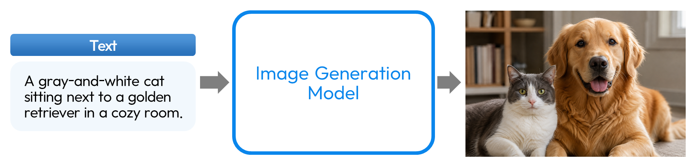
캡셔닝과 반대 방향: 왼쪽 Text 상자의 문장("A gray-and-white cat sitting next to a golden retriever in a cozy room.")을 Image Generation Model에 넣으면, 문장 내용대로의 사진이 오른쪽에 만들어집니다.
| 과제 | 입력 → 답 |
|---|---|
| 분류 | 이미지 전체 → 클래스 |
| 검출 | 이미지 → 물체마다 클래스 + 박스 |
| 분할 | 이미지 → 픽셀마다 클래스 |
| 캡셔닝 | 이미지 → 문장 |
| 이미지 생성 | 문장 → 이미지 |
이미지 인식이 어려운 이유 Challenges in Image Recognition

교안 5쪽 사진 7장(라벨 없음). 4쪽 목록 순서를 윗줄 왼쪽부터 아랫줄 오른쪽까지 차례로 대응시켰습니다 (추측 — 다음 장 표).
사람에게는 일곱 장 모두 "고양이"지만, 컴퓨터가 받는 것은 숫자 배열(→ 03)입니다. 같은 고양이라도 찍는 조건에 따라 숫자가 완전히 달라지므로, 픽셀값을 하나하나 규칙으로 정해서는 인식할 수 없습니다 (보충).
어려움 일곱 가지 — 4쪽 목록과 5쪽 사진
| 교안 4쪽 항목 | 뜻 (보충) | 5쪽 사진 (대응은 추측) |
|---|---|---|
| 시점 변화 Viewpoint variation | 보는 방향이 바뀌면 모양이 달라 보임 | 윗줄 1: 바로 위에서 내려다본 고양이 |
| 조명 Illumination | 빛의 밝기·방향에 따라 픽셀값이 크게 바뀜 | 윗줄 2: 창가 역광 속 어두운 실루엣 |
| 배경 혼잡 Background clutter | 대상이 배경과 비슷해 섞여 보임 | 윗줄 3: 마른 덤불·낙엽 사이의 고양이 |
| 가려짐 Occlusion | 대상의 일부만 보임 | 아랫줄 1: 커튼 뒤에서 얼굴 일부만 |
| 변형 Deformation | 대상 자체의 자세·모양이 바뀜 | 아랫줄 2: 몸을 크게 비틀어 그루밍 |
| 클래스 내 다양성 Intraclass variation | 같은 클래스 안에서도 생김새가 다양함 | 아랫줄 3: 털색·품종이 다른 고양이 여럿 |
| 맥락 Context | 주변 맥락을 봐야 알 수 있음 | 아랫줄 4: 쿠션 뒤로 꼬리만 보이는 장면 |
헷갈리기 쉬운 짝: 가려짐(다른 물체에 가려 일부만 보임) ≠ 배경 혼잡(다 보이지만 배경에 섞임) · 변형(대상의 자세가 바뀜) ≠ 시점 변화(보는 쪽의 위치가 바뀜).
이미지 표현 ① 흑백 이미지 Gray-scale image
Each pixel’s brightness is represented by a value between 0 (black) and 255 (white) in a 2D array.
각 픽셀pixel의 밝기는 0(검정) ~ 255(흰색) 사이의 값 하나로, 2차원 배열에 담깁니다.
그림 읽기: 개의 가슴 털(하늘색 사각형)을 확대하면 숫자 19행 × 16열입니다. 왼쪽 위 동그라미 105 = 픽셀 하나. 배열의 세로가 높이 H, 가로가 너비 W → 모양 (H, W). 이웃한 값끼리 비슷합니다(첫 줄 105, 112, 108, 111…) — 05에서 다시 씁니다.
이미지 표현 ② 컬러 이미지 Color image

| Consists of three channels (Red, Green, and Blue) and is represented as a 3D tensor of shape H × W × 3, where H is the height and W is the width. | 빨강·초록·파랑 세 채널로 이루어지며, 모양이 H × W × 3인 3차원 텐서로 나타냅니다. H는 높이, W는 너비입니다. |
| Example: A single pixel with RGB values (R, G, B) = (230, 150, 70) | 예: 한 픽셀의 RGB 값 (R, G, B) = (230, 150, 70) — 빨강이 강한 주황 계열 색 (보충). 픽셀 하나에 숫자가 3개입니다. |
그림 읽기: 오른쪽은 같은 사진을 R · G · B 평면 세 장으로 나눠 뒤에서 앞으로 겹친 것입니다. 대각선 화살표(RGB Channel)가 채널 방향입니다. 흑백은 평면 1장, 컬러는 3장 — 이 "장 수"가 채널 수 C입니다. 교안 20쪽부터는 같은 것을 (C, H, W) = (3, H, W)로 씁니다(미리 짚을 개념 ②).
전체 구조 ① 지금까지의 신경망 — 완전연결 계층 Overall Structure
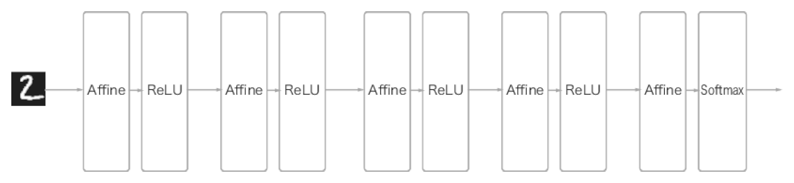
다시 그린 그림 · 누르면 원본| So far, the neural networks we have seen have each neuron connected to every neuron in the adjacent layer. | 지금까지 본 신경망은 각 뉴런이 이웃 층의 모든 뉴런과 연결되어 있었습니다. |
| → This type of connection is called a fully connected layer (FC layer), and we implemented it using a layer named the affine layer. | → 이런 연결을 완전연결 계층fully connected layer, FC layer이라 하고, 우리는 이것을 Affine 계층이라는 이름으로 구현했습니다(P3 12). |
그림 읽기: 입력 이미지 "2" → (Affine → ReLU)가 4번 → 마지막 (Affine → Softmax) → 출력. 모든 상자가 흰색 = 기존 계층. P1–P3에서 만든 신경망이 바로 이 모양입니다(MNIST 784 입력).
전체 구조 ② CNN — 합성곱 계층과 풀링 계층이 추가됨
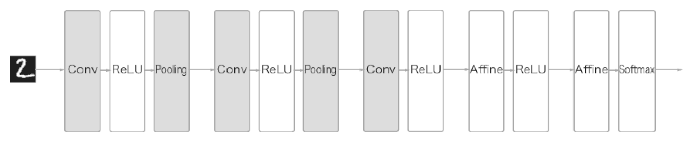
다시 그린 그림 · 누르면 원본In convolutional neural networks (CNNs), new types of layers — the convolution layer and the pooling layer — are added.
CNN에는 새로운 계층인 합성곱 계층convolution layer과 풀링 계층pooling layer이 추가됩니다. 그림에서 회색 상자(Conv, Pooling)가 새 계층입니다.
| 위치 | 계층 연결 | 읽는 법 (보충) |
|---|---|---|
| 입력 쪽 | Conv → ReLU → Pooling 2번, 그다음 Conv → ReLU | FC의 "Affine → ReLU"가 "Conv → ReLU → (Pooling)"으로 바뀜. Pooling은 생략될 수 있음 |
| 출력 쪽 | Affine → ReLU, 마지막 Affine → Softmax | 출력에 가까운 층은 기존 FC 구조를 그대로 씀 |
Conv 뒤의 3차원 데이터를 Affine에 넣으려면 그 앞에서 평탄화가 필요합니다 (보충). ReLU · Softmax는 P1과 같은 함수입니다.
완전연결 계층의 한계 Limitations of Fully Connected Layers
| Fully connected layers ignore the spatial structure of the data. | 완전연결 계층은 데이터의 공간 구조를 무시합니다(원문 밑줄). |
| ▶ Image data is inherently 3-dimensional (Height × Width × Channels). | 이미지 데이터는 본래 3차원(높이 × 너비 × 채널)입니다. |
| ▶ Before being fed into a fully connected layer, the image must be flattened into a 1-D vector. | 완전연결 계층에 넣기 전에 이미지를 1차원 벡터로 평탄화해야 합니다. |
| What spatial information gets lost? | 어떤 공간 정보spatial information를 잃나? → 다음 장 |
| → Convolutional layers preserve the spatial structure of the input by receiving images as 3-dimensional data and passing them to the next layer with the same 3-dimensional structure. | → 합성곱 계층은 이미지를 3차원 데이터로 받고, 다음 층에도 같은 3차원 구조로 넘겨 입력의 공간 구조를 보존합니다. |
- 완전연결 계층은 이미지의 공간 구조를 보존한다 → X (무시함; 보존하는 것은 합성곱 계층)
- 합성곱 계층은 입력을 1차원으로 평탄화해서 받는다 → X (3차원 그대로 받고 3차원으로 넘김)
평탄화하면 잃는 공간 정보 세 가지
| 교안 항목 | 뜻 |
|---|---|
| 국소 근접성 Local proximity | nearby pixels tend to have similar values — 가까운 픽셀끼리 값이 비슷합니다. (6쪽 배열 첫 줄 105, 112, 108, 111) |
| 채널 간 상관 Cross-channel correlations | RGB channels are highly correlated — R · G · B 채널이 서로 강하게 관련됩니다. (같은 자리의 R, G, B 값은 함께 밝고 함께 어두운 경우가 많음, 보충) |
| 공간적 국소성 Spatial locality | visual patterns (edges/textures) are spatially continuous and extend across neighboring pixels — 에지·질감 같은 시각 패턴은 공간적으로 이어져 이웃 픽셀들에 걸쳐 있습니다. |
국어 이름은 이 자료에서 붙인 번역입니다(교안은 영어만).
- (H, W) 배열에서 바로 아래 이웃은 펴면 W칸 뒤로 갑니다. 28×28이면 28칸 떨어져, 옆 이웃(1칸)과 구별되지 않습니다.
- 컬러 (3, 224, 224)를 펴면 150,528개. 뉴런 100개짜리 FC 층 하나의 가중치만 150,528 × 100 = 15,052,800개.
- 합성곱 필터 3×3 하나는 가중치 9개(+ 편향 1)를 이미지 모든 위치에서 같이 씁니다(→ 06, 08).
매개변수가 많으면 과적합 위험이 커집니다(P4 21) (보충, 교안 10쪽에는 매개변수 수 이야기는 없음).
Part 1 정리 — 이미지와 CNN의 큰 그림
- 컴퓨터 비전 과제: 분류(무엇이) · 검출(무엇이 + 어디에, 바운딩 박스) · 분할(픽셀마다 클래스) · 캡셔닝(이미지 → 문장, CNN 인코더 + 언어 디코더) · 텍스트로 이미지 생성.
- 인식이 어려운 이유 7가지: 시점 변화, 조명, 배경 혼잡, 가려짐, 변형, 클래스 내 다양성, 맥락.
- 흑백 이미지 = 픽셀 밝기 0(검정) ~ 255(흰색)의 2차원 배열 (H, W). 컬러 = R · G · B 3채널, H × W × 3의 3차원 텐서(20쪽부터는 (C, H, W)).
- 지금까지의 신경망 = 완전연결(FC) 계층 = Affine 계층. CNN은 여기에 합성곱 계층 · 풀링 계층을 더함: Conv → ReLU → (Pooling) 반복, 출력 쪽은 Affine → ReLU, Affine → Softmax.
- FC의 한계: 입력을 1차원으로 평탄화해야 해서 공간 구조를 무시 — 국소 근접성, 채널 간 상관, 공간적 국소성을 잃음.
- 합성곱 계층은 3차원으로 받고 3차원으로 넘겨 공간 구조를 보존.
합성곱과 풀링 — 계산 중심
합성곱 연산 Convolution Operation
| The input and output data of a convolutional layer are called feature maps. | 합성곱 계층의 입력·출력 데이터를 특징 맵feature map이라고 합니다. |
| The input data is referred to as the input feature map. The output data is referred to as the output feature map. | 입력 데이터 = 입력 특징 맵input feature map, 출력 데이터 = 출력 특징 맵output feature map |
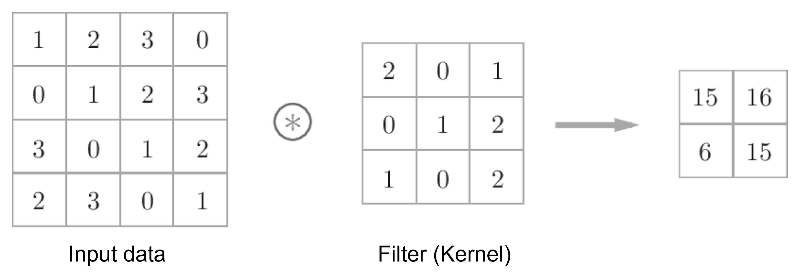
다시 그린 그림 · 누르면 원본그림 읽기: 왼쪽 입력 4×4(Input data) ⊛ 가운데 필터filter 3×3(Filter (Kernel)) → 오른쪽 출력 2×2. ⊛ = 합성곱 연산 기호. 필터는 커널kernel이라고도 부릅니다. 출력 [[15, 16], [6, 15]]이 어떻게 나오는지는 07에서 한 칸씩 따라갑니다.
합성곱 한 칸 = 윈도와 필터의 원소별 곱의 합
Convolution applies the filter to the input data by sliding its window over different regions of the input. (12쪽)
합성곱은 필터의 윈도window를 입력의 여러 영역 위로 미끄러뜨리며 필터를 적용합니다.
- 필터와 같은 크기(3×3)의 윈도를 입력 위에 겹칩니다.
- 윈도 안 9칸과 필터 9칸을 같은 자리끼리 곱해 모두 더합니다. 이 값 하나가 출력 한 칸.
- 윈도를 한 칸 옮겨(왼쪽 → 오른쪽, 위 → 아래) 반복합니다.
4×4 입력에서 3×3 윈도가 놓일 수 있는 자리는 가로 2곳 × 세로 2곳 → 출력 2×2. 식으로는 4 − 31 + 1 = 2 (→ 11).
곱하고 더하는 이 한 번의 계산을 참고서는 단일 곱셈-누산fused multiply-add, FMA이라고 부릅니다. 컴퓨터가 "곱해서 누적 합에 더하기"를 한 동작으로 처리하는 연산 이름입니다.
수학·신호처리의 합성곱은 필터를 180° 뒤집어 곱합니다. 딥러닝의 합성곱은 뒤집지 않고 그대로 곱합니다(정확한 이름은 교차상관cross-correlation). 교안 값 15, 16, 6, 15는 뒤집지 않은 계산입니다. 뒤집으면 [[11, 12], [10, 11]]로 달라집니다.
계산 단계 따라가기 — 읽는 법 Computation steps of the convolution operation
교안 12–13쪽은 같은 입력·필터로 출력 네 칸을 하나씩 채우는 그림 4개입니다(회색 = 지금 윈도). 다음 네 장은 그 네 단계를 같은 그림으로 다시 그리고, 곱 9개와 합을 모두 적었습니다.
- 보라 굵은 테두리 = 지금 계산하는 윈도와 출력 칸
- 옅은 보라 채움 = 앞 단계에서 이미 구한 출력 칸
- 원소별 곱 칸 = 윈도 × 필터를 같은 자리끼리 곱한 9개
시험에서 손으로 할 때도 이 순서(윈도 고르기 → 9개 곱 → 합)를 그대로 쓰면 됩니다 (추측).
이 장에서 쓰는 숫자 (교안 11쪽, 모든 단계 공통)
| 1 | 2 | 3 | 0 |
| 0 | 1 | 2 | 3 |
| 3 | 0 | 1 | 2 |
| 2 | 3 | 0 | 1 |
| 2 | 0 | 1 |
| 0 | 1 | 2 |
| 1 | 0 | 2 |
이 필터는 0이 3칸(1행 2열, 2행 1열, 3행 2열)이라 그 자리의 입력은 볼 필요가 없습니다. 나머지 6칸만 곱해 더하면 됩니다: 필터가 2인 자리(1행 1열, 2행 3열, 3행 3열)는 입력 × 2, 1인 자리(1행 3열, 2행 2열, 3행 1열)는 입력 그대로.
따라가기 1단계 — 출력 (1, 1) 칸 교안 12쪽
1×2 + 2×0 + 3×1 + 0×0 + 1×1 + 2×2 + 3×1 + 0×0 + 1×2
= 2 + 0 + 3 + 0 + 1 + 4 + 3 + 0 + 2 = 15
출발: 필터를 입력의 왼쪽 위에 겹칩니다. 윈도 = 입력 1–3행 · 1–3열 → 출력 (1, 1) 칸에 15. 보라 굵은 테두리 = 지금 계산하는 윈도와 출력 칸.
따라가기 2단계 — 출력 (1, 2) 칸 교안 12쪽
2×2 + 3×0 + 0×1 + 1×0 + 2×1 + 3×2 + 0×1 + 1×0 + 2×2
= 4 + 0 + 0 + 0 + 2 + 6 + 0 + 0 + 4 = 16
1단계 자리에서 오른쪽으로 한 칸 옮겼습니다(스트라이드 1). 윈도 = 입력 1–3행 · 2–4열 → 출력 (1, 2) 칸에 16. 옅은 보라로 채운 출력 칸 = 앞 단계에서 이미 구한 값.
따라가기 3단계 — 출력 (2, 1) 칸 교안 13쪽
0×2 + 1×0 + 2×1 + 3×0 + 0×1 + 1×2 + 2×1 + 3×0 + 0×2
= 0 + 0 + 2 + 0 + 0 + 2 + 2 + 0 + 0 = 6
오른쪽 끝에 닿았으므로 한 칸 아래, 왼쪽 끝으로 갑니다. 윈도 = 입력 2–4행 · 1–3열 → 출력 (2, 1) 칸에 6. 곱 9개 중 0이 아닌 것은 2, 2, 2 세 개뿐이라 값이 작습니다.
따라가기 4단계 — 출력 (2, 2) 칸 교안 13쪽
1×2 + 2×0 + 3×1 + 0×0 + 1×1 + 2×2 + 3×1 + 0×0 + 1×2
= 2 + 0 + 3 + 0 + 1 + 4 + 3 + 0 + 2 = 15
다시 오른쪽으로 한 칸. 마지막 자리입니다. 윈도 = 입력 2–4행 · 2–4열 → 출력 (2, 2) 칸에 15. 이 윈도의 숫자(1 2 3 · 0 1 2 · 3 0 1)는 1단계 윈도와 똑같아서 같은 값 15가 나옵니다. 최종 출력은 [[15, 16], [6, 15]]입니다.
네 단계 한눈에 — 윈도 위치와 결과
| 단계 | 윈도 (행 · 열) | 0이 아닌 곱만 더하기 | 출력 칸 |
|---|---|---|---|
| 1 | 1–3행 · 1–3열 | 2 + 3 + 1 + 4 + 3 + 2 = 15 | (1, 1) |
| 2 | 1–3행 · 2–4열 | 4 + 2 + 6 + 4 = 16 | (1, 2) |
| 3 | 2–4행 · 1–3열 | 2 + 2 + 2 = 6 | (2, 1) |
| 4 | 2–4행 · 2–4열 | 2 + 3 + 1 + 4 + 3 + 2 = 15 | (2, 2) |
| 15 | 16 |
| 6 | 15 |
- 윈도는 왼쪽 → 오른쪽, 끝에 닿으면 아래로 한 줄 — 출력도 그 순서로 채워집니다.
- 출력 칸 수 = 윈도가 놓일 수 있는 자리 수(2 × 2).
- 필터는 모든 자리에서 같은 9개 값을 씁니다 — 필터가 학습되는 가중치입니다(→ 08).
반대로 바꾸면 틀리는 문장: 합성곱의 한 칸은 윈도와 필터의 행렬 곱이다 → X (같은 자리끼리 곱한 원소별 곱의 합) · 4×4 입력에 3×3 필터(패딩 0, 스트라이드 1)면 출력은 3×3이다 → X (2×2)
필터 = 학습되는 가중치, 그리고 편향
In CNNs, the filter represents the learnable weights, and each filter also has an associated bias term.
CNN에서 필터는 학습되는 가중치learnable weights이고, 필터마다 편향bias 항이 하나씩 딸려 있습니다.
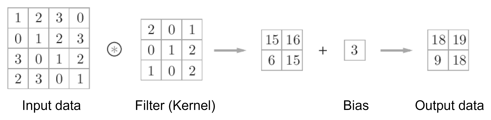
다시 그린 그림 · 누르면 원본그림 읽기: Input data ⊛ Filter (Kernel) → 합성곱 결과 [[15, 16], [6, 15]] (07과 같음) + Bias 3 → Output data [[18, 19], [9, 18]]. 편향은 숫자 하나이고, 출력의 네 칸 모두에 똑같이 더해집니다(15 + 3 = 18, 16 + 3 = 19, 6 + 3 = 9, 15 + 3 = 18). Python 검산.
Affine 계층과 나란히 놓고 보기
| Affine 계층 (P3 12) | 합성곱 계층 | |
|---|---|---|
| 가중치 | W (행렬) | 필터의 값들 |
| 편향 | b — 출력 뉴런마다 하나 | b — 필터마다 하나, 출력 모든 칸에 같이 더함 |
| 한 출력값 | 입력 전체와 W 한 열의 곱의 합 + b | 입력의 윈도(일부)와 필터의 곱의 합 + b |
| 학습 | 둘 다 역전파로 기울기를 구해 갱신 (P2, P3) | |
14쪽 예의 학습되는 값 = 필터 9개 + 편향 1개 = 10개 (보충, 채널 1 · 필터 1개일 때). 채널 · 필터가 많을 때의 매개변수 수는 13에서 계산합니다.
교안 예의 필터 값(2 0 1 · 0 1 2 · 1 0 2)은 사람이 정한 예시입니다. 실제 CNN에서는 필터 값을 처음에 무작위로 두고, 손실이 줄도록 학습으로 정합니다. 학습된 1층 필터가 어떤 모양이 되는지는 25쪽 그림에서 봅니다(→ 15).
- 필터 값은 사람이 미리 정해 두고 학습하지 않는다 → X (학습되는 가중치)
- 편향은 출력 칸마다 서로 다른 값이 더해진다 → X (필터 하나당 값 하나를 모든 칸에)
패딩 Padding
| Padding refers to adding extra values (typically zeros) around the borders of the input before performing convolution. | 패딩 = 합성곱을 하기 전에 입력의 테두리 둘레에 여분의 값(보통 0)을 덧붙이는 것. 0을 채우면 0 패딩zero padding (보충 용어). |
| Padding is used to preserve the spatial size of the output feature map and prevent loss of information near the edges of the input. | 쓰는 이유: ① 출력 특징 맵의 공간 크기를 유지, ② 입력 가장자리 근처의 정보 손실을 막음. |
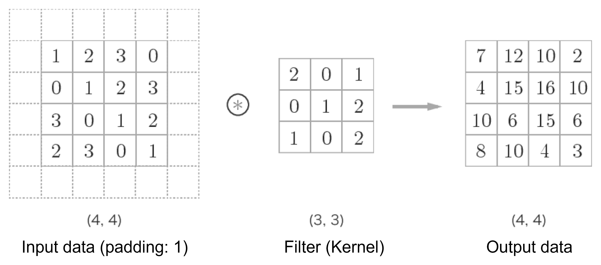
다시 그린 그림 · 누르면 원본그림 읽기: Input data (padding: 1) — 4×4 입력 둘레의 점선 빈 칸이 패딩(값 0, "패딩 1" = 1칸 폭)이라 실제로는 6×6. 같은 필터 → 출력 (4, 4): 입력과 크기가 같아졌습니다(패딩 없을 때 (2, 2)).
패딩 따라가기 1 — 출력 (1, 1) 칸
0×2 + 0×0 + 0×1 + 0×0 + 1×1 + 2×2 + 0×1 + 0×0 + 1×2
= 0 + 0 + 0 + 0 + 1 + 4 + 0 + 0 + 2 = 7
윈도 = 패딩 포함 입력 1–3행 · 1–3열 (점선 회색 칸 = 패딩 0). 왼쪽 위 모서리. 윈도 9칸 중 5칸이 패딩(0)이라 곱도 0이 되고, 원래 입력 4칸(1, 2, 0, 1)만 값에 들어갑니다. → 7
패딩 따라가기 2 — 출력 (1, 2) 칸
0×2 + 0×0 + 0×1 + 1×0 + 2×1 + 3×2 + 0×1 + 1×0 + 2×2
= 0 + 0 + 0 + 0 + 2 + 6 + 0 + 0 + 4 = 12
윈도 = 패딩 포함 입력 1–3행 · 2–4열 (점선 회색 칸 = 패딩 0). 오른쪽으로 한 칸. 윗줄 3칸이 패딩입니다. → 12. 패딩이 없었다면 이 자리(출력 1행)는 아예 계산되지 않았습니다.
패딩 따라가기 3 — 출력 (2, 2) 칸
1×2 + 2×0 + 3×1 + 0×0 + 1×1 + 2×2 + 3×1 + 0×0 + 1×2
= 2 + 0 + 3 + 0 + 1 + 4 + 3 + 0 + 2 = 15
윈도 = 패딩 포함 입력 2–4행 · 2–4열 (점선 회색 칸 = 패딩 0). 패딩이 하나도 없는 가운데 자리. 윈도가 06의 1단계와 같은 3×3이라 값도 15로 같습니다. 그래서 4×4 출력의 가운데 2×2는 패딩 없는 결과 [[15, 16], [6, 15]]와 같습니다.
채워진 (1, 3) · (1, 4) · (2, 1) 칸(10, 2, 4)도 같은 방법으로 구한 값입니다. 16칸 전체는 다음 장.
패딩 1의 결과 16칸과 그 의미
출력 (4, 4) (교안 15쪽, Python 검산 일치)
| 7 | 12 | 10 | 2 |
| 4 | 15 | 16 | 10 |
| 10 | 6 | 15 | 6 |
| 8 | 10 | 4 | 3 |
보라 칸 = 윈도에 패딩이 없는 자리 → 패딩 없는 결과 [[15, 16], [6, 15]]와 같습니다. 둘레 12칸은 패딩 덕분에 새로 생긴 출력입니다.
출력 크기 4 + 2 × 1 − 31 + 1 = 4 (→ 11)
패딩 없이 3×3 합성곱을 거듭하면 4×4 → 2×2 → 다음 3×3은 더 놓을 자리가 없음. 층을 깊게 쌓을수록 이미지가 빨리 줄어듭니다. 3×3 필터에 패딩 1이면 4×4 → 4×4 → 4×4… 크기가 유지됩니다.
입력 한 칸이 몇 개의 윈도에 들어가는지 세면 — 패딩 없음: 모서리 칸 1번, 가운데 칸 4번. 패딩 1: 모서리 칸 4번, 가운데 칸 9번. 패딩이 없으면 가장자리 값이 출력에 거의 반영되지 않습니다.
반대로 바꾸면 틀리는 문장: 패딩은 합성곱 뒤에 출력 둘레에 붙인다 → X (합성곱 전에 입력 둘레) · 패딩을 넣으면 출력이 작아진다 → X (커지거나 유지됨)
스트라이드 Stride
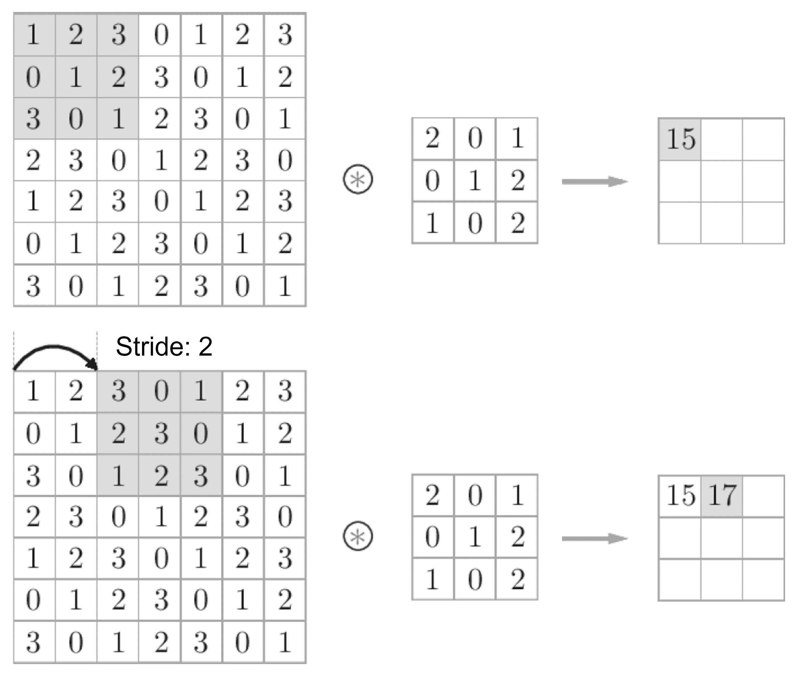
다시 그린 그림 · 누르면 원본Stride refers to the spacing between filter application positions.
스트라이드 = 필터를 적용하는 위치 사이의 간격. 06–09는 모두 스트라이드 1이었습니다.
그림 읽기: 입력 7×7, 같은 필터, 출력 3×3.
- 위: 윈도 1–3행 · 1–3열 → 15
- 아래: "Stride: 2" — 오른쪽으로 두 칸, 1–3행 · 3–5열 → 17
- 나머지 7칸은 빈칸(다음 장들에서 채움)
윈도 자리: 1–3열, 3–5열, 5–7열 — 가로 3곳 × 세로 3곳 → 출력 3×3.
스트라이드 2 따라가기 1 — 출력 (1, 1) 칸
1×2 + 2×0 + 3×1 + 0×0 + 1×1 + 2×2 + 3×1 + 0×0 + 1×2
= 2 + 0 + 3 + 0 + 1 + 4 + 3 + 0 + 2 = 15
윈도 = 입력 1–3행 · 1–3열. 출발: 왼쪽 위 3×3. 교안 16쪽 위 그림과 같습니다. → 출력 (1, 1) = 15
스트라이드 2 따라가기 2 — 출력 (1, 2) 칸
3×2 + 0×0 + 1×1 + 2×0 + 3×1 + 0×2 + 1×1 + 2×0 + 3×2
= 6 + 0 + 1 + 0 + 3 + 0 + 1 + 0 + 6 = 17
윈도 = 입력 1–3행 · 3–5열. 오른쪽으로 두 칸(스트라이드 2) 옮겨 3–5열. 교안 16쪽 아래 그림(“Stride: 2” 곡선 화살표)과 같습니다. → (1, 2) = 17
스트라이드 2 따라가기 3 — 출력 (2, 1) 칸
3×2 + 0×0 + 1×1 + 2×0 + 3×1 + 0×2 + 1×1 + 2×0 + 3×2
= 6 + 0 + 1 + 0 + 3 + 0 + 1 + 0 + 6 = 17
윈도 = 입력 3–5행 · 1–3열. 오른쪽 끝(5–7열, (1, 3) = 15)까지 간 뒤 두 칸 아래, 왼쪽 끝으로: 3–5행 · 1–3열. 세로로도 2칸씩 움직입니다. → (2, 1) = 17 (교안 그림은 2단계까지만 있음, 이후는 보충)
스트라이드 1과 2 비교 — 출력 크기가 줄어듦
| 스트라이드 1 | 스트라이드 2 | |||||||||||||||||||||||||||||||||||
|---|---|---|---|---|---|---|---|---|---|---|---|---|---|---|---|---|---|---|---|---|---|---|---|---|---|---|---|---|---|---|---|---|---|---|---|---|
| 윈도 왼쪽 열 | 1, 2, 3, 4, 5열 | 1, 3, 5열 | ||||||||||||||||||||||||||||||||||
| 출력 크기 | 7 − 31 + 1 = 5 → 5×5 | 7 − 32 + 1 = 3 → 3×3 | ||||||||||||||||||||||||||||||||||
| 출력 |
|
|
(보충) Python 검산. 스트라이드 2의 출력 = 스트라이드 1 출력에서 한 칸씩 건너뛴 보라 칸들.
- 스트라이드를 키우면 윈도가 듬성듬성 놓여 출력이 작아집니다(5×5 → 3×3).
- 패딩은 출력을 키우고(→ 09), 스트라이드는 줄입니다. 둘을 함께 넣은 출력 크기는 공식 하나로 구합니다 (→ 11):
OH = H + 2P − FHS + 1
반대로 바꾸면 틀리는 문장: 스트라이드는 필터의 크기다 → X (필터 적용 위치 사이의 간격) · 스트라이드를 키우면 출력이 커진다 → X (작아짐)
출력 크기 공식 Output Size Formula of Convolution
교안 17쪽은 09 패딩, 10 스트라이드를 한 식으로 묶습니다. 주어진 것 Given:
| 기호 | 뜻 |
|---|---|
| (H, W) | 입력 크기 — 높이 H, 너비 W Input size |
| (FH, FW) | 필터 크기 — 필터 높이, 필터 너비 Filter size |
| P | 패딩 — 입력 둘레에 0을 채운 폭(→ 09) Padding |
| S | 스트라이드 — 필터를 옮기는 간격(→ 10) Stride |
| (OH, OW) | 출력 특징 맵 크기 output feature map size |
교안은 예 두 개(입력 (4, 4)·패딩 1·스트라이드 1·필터 (3, 3), 입력 (7, 7)·패딩 0·스트라이드 2·필터 (3, 3))만 적고 답은 적지 않았습니다. 답은 다음 두 장에서 한 단계씩 구합니다.
OH = H + 2P − FHS + 1
OW = W + 2P − FWS + 1
식을 읽는 법 (보충) — 한 방향(세로)만 봅니다.
출력 크기 따라가기 ① 입력 (4, 4) · P = 1 · S = 1 · 필터 (3, 3)
| 단계 | 계산 | 뜻 |
|---|---|---|
| ① | H + 2P = 4 + 2 × 1 = 6 | 패딩을 넣은 높이 |
| ② | 6 − FH = 6 − 3 = 3 | 움직일 수 있는 거리 |
| ③ | 3S = 31 = 3 | 옮기는 횟수 |
| ④ | 3 + 1 = 4 | 놓이는 자리 수 |
OH = 4 + 2 × 1 − 31 + 1 = 4
너비도 같은 값이라 OW = 4 → 출력 (4, 4). 교안 15쪽 패딩 그림의 출력 4×4와 같습니다(→ 09). 패딩 1 덕분에 입력 크기 (4, 4)가 그대로 유지됩니다.
그림 읽기: 위 한 줄은 입력의 한 행(1–4)에 양 끝 패딩 칸(점선, 값 0)을 붙인 6칸입니다. 아래 보라 막대는 필터(3칸)가 놓이는 자리이고, 한 칸씩(S = 1) 옮겨 4곳에 놓입니다. 자리 하나가 출력 한 칸입니다 (보충).
출력 크기 따라가기 ② 입력 (7, 7) · P = 0 · S = 2 · 필터 (3, 3)
| 단계 | 계산 | 뜻 |
|---|---|---|
| ① | H + 2P = 7 + 2 × 0 = 7 | 패딩 없음 |
| ② | 7 − FH = 7 − 3 = 4 | 움직일 수 있는 거리 |
| ③ | 4S = 42 = 2 | 2칸씩 옮기는 횟수 |
| ④ | 2 + 1 = 3 | 놓이는 자리 수 |
OH = 7 + 2 × 0 − 32 + 1 = 3
OW도 3 → 출력 (3, 3). 교안 16쪽 스트라이드 2 그림의 출력 3×3 격자와 같습니다(→ 10). 전체를 계산하면 [[15, 17, 15], [17, 15, 17], [15, 17, 15]]이고, 그림에 적힌 15, 17과 맞습니다(Python 검산).
그림 읽기: 필터(3칸)가 1–3칸, 3–5칸, 5–7칸에 놓입니다. 두 칸씩 건너뛰므로 3칸째와 5칸째는 두 번 겹쳐 쓰입니다. 스트라이드가 커지면 놓이는 자리가 줄어 출력이 작아집니다.
출력 크기 공식 — 여러 예를 한 표로 (Python 검산)
| H | FH | P | S | 계산 | OH | 어디서 |
|---|---|---|---|---|---|---|
| 4 | 3 | 0 | 1 | 4 + 0 − 31 + 1 | 2 | 교안 11쪽 기본 합성곱 예 (→ 06) |
| 4 | 3 | 1 | 1 | 4 + 2 − 31 + 1 | 4 | 교안 15쪽 패딩, 17쪽 예 1 (→ 09) |
| 7 | 3 | 0 | 2 | 7 + 0 − 32 + 1 | 3 | 교안 16쪽 스트라이드, 17쪽 예 2 (→ 10) |
| 4 | 2 | 0 | 2 | 4 + 0 − 22 + 1 | 2 | 교안 23쪽 2×2 풀링도 같은 식 (→ 14) |
| 28 | 5 | 0 | 1 | 28 + 0 − 51 + 1 | 24 | (보충) MNIST 28×28(→ P2 19)에 5×5 필터 |
| 32 | 5 | 0 | 1 | 32 + 0 − 51 + 1 | 28 | LeNet 첫 합성곱 32×32 → 28×28 (→ 18) |
| 227 | 11 | 0 | 4 | 227 + 0 − 114 + 1 | 55 | AlexNet 첫 합성곱 (→ 19) |
| 224 | 3 | 1 | 1 | 224 + 2 − 31 + 1 | 224 | VGGNet의 3×3 합성곱 (→ 20) |
높이와 너비는 따로 계산합니다. 예: 입력 (4, 6), 필터 (3, 3), P = 0, S = 1이면 OH = 4 − 31 + 1 = 2, OW = 6 − 31 + 1 = 4 → 출력 (2, 4) (보충).
나누어떨어지지 않을 때 (보충 — 교안에 없음)
입력 6칸, 필터 3, 패딩 0, 스트라이드 2:
OH = 6 + 0 − 32 + 1 = 32 + 1 = 2.5
출력 칸 수가 정수가 아닙니다. 그림처럼 필터는 1–3칸, 3–5칸 2곳에만 놓이고, 세 번째 자리(5–7칸)는 입력 밖으로 나가 놓일 수 없습니다. 6칸째는 한 번도 쓰이지 않습니다.
- 책(『밑바닥부터 시작하는 딥러닝 1』)은 식의 값이 정수가 되도록 패딩·스트라이드를 정해야 한다고 설명합니다.
- PyTorch 같은 프레임워크는 보통 내림(소수점 버림)해서 2로 계산합니다.
- AlexNet 입력을 224로 넣으면 224 − 114 + 1 = 54.25가 되어 맞지 않습니다. 그래서 227로 적는 경우가 많습니다(→ 19).
OH = H가 되려면 2P = FH − 1, 즉 P = FH − 12. 필터 3 → P = 1, 필터 5 → P = 2. 예: (4, P = 1, 필터 3) → 4, (28, P = 2, 필터 5) → 28 + 4 − 51 + 1 = 28.
거꾸로 묻는 경우 — 모르는 값 하나 구하기 (보충) 연습
입력 (32, 32), 필터 (5, 5), 스트라이드 1, 출력 (32, 32)일 때 P는?
32 = 32 + 2P − 51 + 1
→ 31 = 27 + 2P → 2P = 4 → P = 2
입력 (7, 7), 필터 (3, 3), 패딩 0, 출력 (3, 3)일 때 S는?
3 = 7 + 0 − 3S + 1
→ 4S = 2 → S = 2 (교안 16쪽 예)
입력 (28, 28), 패딩 0, 스트라이드 1, 출력 (24, 24)일 때 FH는?
24 = 28 + 0 − FH1 + 1
→ 23 = 28 − FH → FH = 5
자주 틀리는 곳 (추측): ① 패딩을 2P가 아니라 P로 더함(양쪽에 붙으므로 2배) ② 마지막 + 1을 빠뜨림 ③ S로 나누는 범위를 분자 전체가 아니라 일부에만 적용함. 분수 막대 아래 S는 H + 2P − FH 전체를 나눕니다.
3차원 데이터의 합성곱 Convolution on 3-Dimensional Data
- 2차원과 비교하면 특징 맵이 채널 방향으로 늘어난 것입니다(컬러 이미지의 R·G·B, → 03). the feature maps are extended along the channel dimension.
- 채널이 여러 장이면 채널마다 따로 합성곱을 하고, 그 결과를 더해서 출력 1장을 만듭니다(교안 밑줄). convolution is performed independently on each channel …, and the results are summed to produce a single output.
- 입력의 채널 수와 필터의 채널 수는 같아야 합니다(19쪽). The number of channels in the input must match the number of channels in the filter.
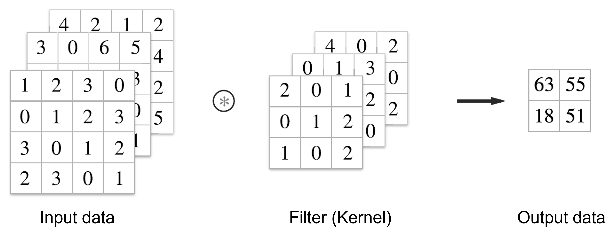
다시 그린 그림 · 누르면 원본그림 읽기: 입력 3장(각 4×4)과 필터 3장(각 3×3)이 앞뒤로 겹쳐 있고, 출력은 2×2 한 장입니다. 뒤의 두 장은 앞 장에 가려 일부 숫자만 보입니다.
교안 예 읽기 — 맨 앞 채널만 확인할 수 있다
19쪽은 18쪽 예를 4단계로 보여 줍니다. 세 채널 모두에서 같은 위치에 창(3×3)이 놓이고, 위치 하나에 출력값 하나가 나옵니다(스트라이드 1).
| 단계 | 창 위치 (모든 채널 공통) | 맨 앞 채널 합성곱 | 뒤 두 채널 합(역산) | 출력 |
|---|---|---|---|---|
| 1 | 1–3행, 1–3열 | 15 | 48 | 63 |
| 2 | 1–3행, 2–4열 | 16 | 39 | 55 |
| 3 | 2–4행, 1–3열 | 6 | 12 | 18 |
| 4 | 2–4행, 2–4열 | 15 | 36 | 51 |
맨 앞 채널의 입력·필터는 교안 11쪽 예와 똑같습니다. 그래서 맨 앞 채널의 합성곱은 [[15, 16], [6, 15]](→ 07)입니다(Python 검산).
가운데·뒤 채널은 숫자가 가려져 직접 계산할 수 없습니다. 출력에서 맨 앞 채널 몫을 빼면 두 채널의 합은 [[48, 39], [12, 36]]이어야 합니다(역산값, 확인 필요). 가운데 채널 오른쪽 열 5, 3, 0, 1도 반쯤 가려져 판독이 확실하지 않습니다.
출력 = (채널 1 합성곱) + (채널 2 합성곱) + (채널 3 합성곱). 같은 위치끼리 더합니다. 다음 장부터 숫자가 모두 보이는 작은 예로 한 칸씩 따라갑니다.
채널 합 따라가기 1단계 — 왼쪽 위 창 (보충) 이해용 계산
S = 1, P = 0 → 출력 3 − 21 + 1 = 2, 즉 2×2 한 장. 보라 테두리 = 지금 창·지금 채우는 칸. 세 채널 결과 2, 1, 2를 더해 5.
채널 합 따라가기 2단계 — 오른쪽으로 한 칸 (보충)
세 채널 모두 창이 같이 오른쪽으로 한 칸 옮겨 갑니다. 채널마다 5, 4, 1 → 합 10. 이미 구한 출력 칸(5)은 채움색으로 표시했습니다.
채널 합 따라가기 3단계 — 아래 줄 왼쪽 (보충)
창이 한 줄 내려와 왼쪽에서 다시 시작합니다. 채널마다 1, 3, 2 → 합 6.
채널 합 따라가기 4단계 — 오른쪽 아래 (보충)
채널마다 1, 2, 4 → 합 7. 최종 출력은 [[5, 10], [6, 7]] 한 장입니다(Python 검산). 입력이 3채널이어도 필터가 하나면 출력은 1채널입니다.
3차원 합성곱 정리 — 한 칸의 값은 곱셈 몇 번의 합인가
| 출력 칸 | 채널 1 | 채널 2 | 채널 3 | 합 |
|---|---|---|---|---|
| (1, 1) | 2 | 1 | 2 | 5 |
| (1, 2) | 5 | 4 | 1 | 10 |
| (2, 1) | 1 | 3 | 2 | 6 |
| (2, 2) | 1 | 2 | 4 | 7 |
(보충) 예의 값. 행·열 번호는 1부터 셉니다.
출력 한 칸 = C × FH × FW번 곱해서 모두 더한 값. 이 예는 3 × 2 × 2 = 12번, 교안 18쪽 예는 3 × 3 × 3 = 27번입니다 (보충).
- 채널마다 2차원 합성곱(06–07과 같은 계산) → 같은 위치끼리 더함 → 출력 1장.
- 입력 채널 수 = 필터 채널 수(19쪽). 다르면 채널끼리 짝이 맞지 않아 계산할 수 없습니다.
- 창은 모든 채널에서 같은 위치로 함께 움직입니다. 채널 방향으로는 움직이지 않습니다 (보충).
- 편향을 쓰면 합한 뒤 필터 하나에 값 하나를 모든 칸에 더합니다(→ 08, 13).
반대로 바꾸면 틀리는 문장 (추측): "입력이 3채널이면 출력도 3채널이다" — 틀림. 출력 채널 수는 필터 개수가 정합니다(→ 13). 채널을 유지하는 것은 풀링입니다(→ 14).
블록으로 생각하기 Thinking in Blocks
3차원 데이터는 (채널, 높이, 너비) = (C, H, W) 순서의 다차원 배열로 씁니다 For multidimensional array representation of 3-dimensional data, we will use the format (channels, height, width).
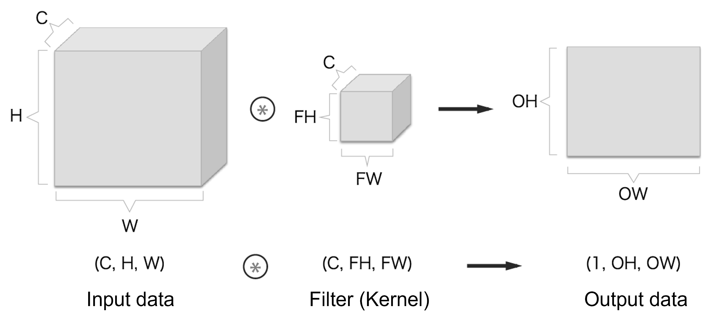
다시 그린 그림 · 누르면 원본입력 = 큰 직육면체, 필터 = 작은 직육면체(깊이 C가 같음), 출력 = 두께 없는 판. 필터가 1개면 출력은 채널 1장이고, OH·OW는 11의 공식으로 구합니다.
7쪽 컬러 이미지는 H × W × 3(채널이 마지막)으로 적혀 있었습니다(→ 03). 여기서부터는 채널이 맨 앞입니다. 같은 데이터를 적는 순서만 다릅니다 (보충).
필터를 FN개 쓰면 출력이 FN채널
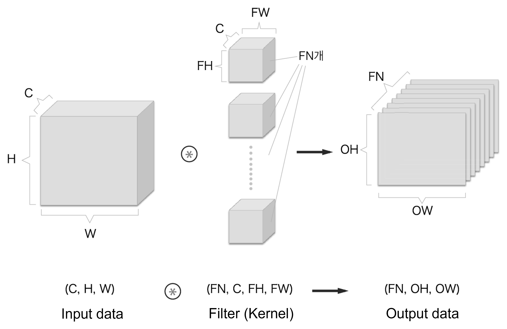
다시 그린 그림 · 누르면 원본(C, H, W) ⊛ (FN, C, FH, FW)
→ (FN, OH, OW)
- 필터 1개 → 출력 1장(12). 필터 FN개 → 출력 FN장. 필터 묶음은 4차원 (FN, C, FH, FW).
- 출력 채널 수 FN이 다음 층의 입력 채널 수 C가 됩니다 (보충). FN은 원하는 만큼 정하는 하이퍼파라미터입니다.
교안 The size of the filter (FN) can be set to any desired value.의 FN은 필터의 크기가 아니라 개수입니다(그림 라벨 "FN개"). 확인 필요에 적었습니다.
편향까지 넣은 처리 흐름 With bias
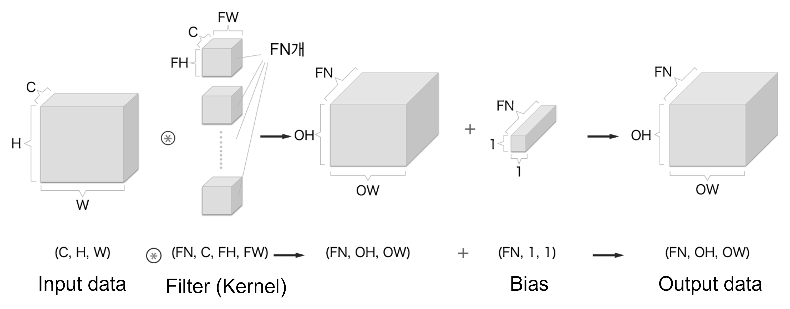
다시 그린 그림 · 누르면 원본(C, H, W) ⊛ (FN, C, FH, FW) → (FN, OH, OW) + (FN, 1, 1) → (FN, OH, OW)
그림 읽기: 입력 ⊛ 필터 FN개 → 중간 결과 (FN, OH, OW) + 가는 막대 모양 편향 (FN, 1, 1) → 출력 (FN, OH, OW). 편향을 더해도 모양은 그대로입니다.
편향 (FN, 1, 1)은 어떻게 더해지나
- 편향은 필터 하나에 값 하나 → 모두 FN개, 모양 (FN, 1, 1)의 가는 막대.
- 각 채널의 OH × OW 모든 칸에 같은 값을 더합니다. 모양이 달라도 더할 수 있는 것은 넘파이의 브로드캐스트 덕분입니다 (보충, → P1).
합성곱 [[15, 16], [6, 15]] + 편향 3 → [[18, 19], [9, 18]]. 네 칸 모두에 3이 더해졌습니다. 출력 모양은 편향을 더해도 (FN, OH, OW) 그대로입니다.
| 출력 채널 | 합성곱 결과 (OH × OW = 2 × 2) | + 편향 | 출력 |
|---|---|---|---|
| 1 (교안 11·14쪽 예) | [[15, 16], [6, 15]] | + 3 (네 칸 모두) | [[18, 19], [9, 18]] |
| 2 (12의 보충 예) | [[5, 10], [6, 7]] | + (−1) (네 칸 모두) | [[4, 9], [5, 6]] |
(2, 2, 2) + (2, 1, 1) → (2, 2, 2). 편향은 채널마다 다르고, 한 채널 안에서는 모든 칸에 같습니다(넘파이로 확인).
배치 처리와 모양 따라가기 (보충 — 배치 N은 책 기준)
신경망은 데이터를 N개씩 묶어 한 번에 처리합니다(미니배치, → P2 04). 모든 데이터에 맨 앞 차원 N이 붙어 4차원이 됩니다.
(N, C, H, W) ⊛ (FN, C, FH, FW) → (N, FN, OH, OW) + (FN, 1, 1) → (N, FN, OH, OW)
필터와 편향은 N이 붙지 않습니다. 배치 안의 모든 데이터가 같은 필터·편향을 함께 씁니다.
예: MNIST 100장(1채널 28×28), 5×5 필터 30개, P = 0, S = 1, 이어서 2×2 최대 풀링(S = 2)
| 단계 | 무엇을 | 모양 |
|---|---|---|
| ① | 입력 | (100, 1, 28, 28) |
| ② | 필터 30개 — 데이터 수와 무관 | (30, 1, 5, 5) |
| ③ | 합성곱: 28 − 51 + 1 = 24 | (100, 30, 24, 24) |
| ④ | 편향 (30, 1, 1)을 더함 | (100, 30, 24, 24) |
| ⑤ | 풀링: 24 − 22 + 1 = 12 | (100, 30, 12, 12) |
| ⑥ | 평탄화: 30 × 12 × 12 = 4320 | (100, 4320) |
⑥ 다음은 완전연결(Affine) 계층의 입력 (배치 수 × 특징 수)과 같은 2차원 모양입니다(→ P3 13). 필터 30개는 25쪽 시각화의 필터 수와 같습니다(→ 15).
매개변수 수 따라가기 (보충) 계산 — 블록 그림의 모양에서 바로 나옴
학습되는 값은 필터(가중치)와 편향뿐입니다(→ 08). 블록 그림의 모양을 그대로 곱합니다.
가중치 수 = FN × C × FH × FW
편향 수 = FN
H, W(입력 크기)와 OH, OW(출력 크기)는 식에 들어가지 않습니다. 같은 필터를 모든 위치에 다시 쓰기 때문입니다. 풀링 계층은 0개입니다(→ 14).
| 예 | FN × C × FH × FW | + FN | 합 |
|---|---|---|---|
| 교안 18쪽: 1개, 3채널, 3×3 (편향 없음) | 1 × 3 × 3 × 3 = 27 | — | 27 |
| MNIST 예(앞 장): 30개, 1채널, 5×5 | 30 × 1 × 5 × 5 = 750 | 30 | 780 |
| 컬러 32×32 입력: 10개, 3채널, 5×5 | 10 × 3 × 5 × 5 = 750 | 10 | 760 |
| LeNet 첫 합성곱: 6개, 1채널, 5×5 (→ 18) | 6 × 1 × 5 × 5 = 150 | 6 | 156 |
| AlexNet 첫 합성곱: 96개, 3채널, 11×11 (→ 19) | 96 × 3 × 11 × 11 = 34848 | 96 | 34944 |
모두 Python 검산. 순서: ① 필터 한 개의 크기 C × FH × FW ② × 필터 개수 FN ③ + 편향 FN.
같은 일을 완전연결 계층으로 하면 (보충) 비교 계산
앞 장의 컬러 예: 입력 (3, 32, 32) → 출력 (10, 28, 28).
| 합성곱 계층 | 완전연결 계층 | |
|---|---|---|
| 입력 수 | 3 × 32 × 32 = 3072 | |
| 출력 수 | 10 × 28 × 28 = 7840 | |
| 가중치 | 10 × 3 × 5 × 5 = 750 | 3072 × 7840 = 24084480 |
| 편향 | 10 | 7840 |
| 합 | 760 | 24092320 |
완전연결은 가중치가 (입력 수 × 출력 수) 모양의 행렬입니다(→ P3 12, P2 21의 W1 784×50과 같은 규칙).
- 완전연결 계층은 입력을 1줄로 펴서(평탄화) 받으므로 공간 정보(위아래·좌우로 이웃한 픽셀 관계)를 쓰지 않습니다(→ 05).
- 합성곱 계층은 작은 필터 하나를 이미지 전체에 다시 씁니다. 그래서 매개변수가 훨씬 적고, 어느 위치의 같은 무늬에도 같은 필터가 반응합니다 (보충).
이 비교는 교안에 없는 (보충) 계산입니다. 시험에 나온다면 "매개변수 수 = FN × C × FH × FW + FN" 꼴일 가능성이 높다고 봅니다 (추측).
풀링 Pooling
| 교안 문장 | 뜻 |
|---|---|
| Pooling is an operation that reduces the spatial size of feature maps by summarizing values within a region (e.g., taking the maximum or average). | 풀링은 한 영역의 값을 하나로 요약해(예: 최댓값이나 평균) 특징 맵의 공간 크기(높이·너비)를 줄이는 연산입니다. |
- 최대 풀링max pooling: 창 안의 최댓값. 교안 그림(23쪽)이 이것입니다.
- 평균 풀링average pooling: 창 안의 평균.
- 교안 그림: 창 2×2, 스트라이드 2. 보통 창 크기와 스트라이드를 같게 둬서 창이 겹치지 않게 합니다 (보충, 책 기준).
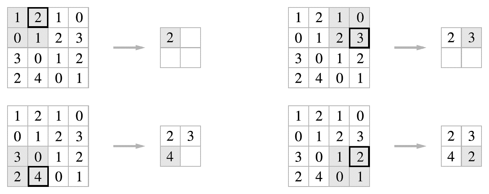
다시 그린 그림 · 누르면 원본그림 읽기: 4단계(왼쪽 위 → 오른쪽 위 → 왼쪽 아래 → 오른쪽 아래). 회색 = 지금 창, 굵은 테두리 = 그 창의 최댓값. 출력 크기도 11의 공식 그대로입니다: 4 − 22 + 1 = 2.
최대 풀링 따라가기 1단계 — 왼쪽 위 창
창(1–2행, 1–2열)의 값: 1, 2, 0, 1
가장 큰 값 = 2 (1행 2열, 빨간 테두리)
→ 출력 (1, 1) = 2
보라 테두리 = 지금 창·지금 채우는 출력 칸, 빨간 테두리 = 창의 최댓값, 채움색 = 이미 구한 출력 칸. 곱셈·덧셈이 없고 비교만 합니다.
최대 풀링 따라가기 2단계 — 오른쪽으로 2칸
스트라이드 2라서 창이 2칸 옮겨 갑니다. 1단계 창과 겹치지 않습니다.
창(1–2행, 3–4열)의 값: 1, 0, 2, 3
가장 큰 값 = 3 (2행 4열)
→ 출력 (1, 2) = 3
최대 풀링 따라가기 3단계 — 아래로 2칸, 왼쪽부터
창(3–4행, 1–2열)의 값: 3, 0, 2, 4
가장 큰 값 = 4 (4행 2열)
→ 출력 (2, 1) = 4
3이 먼저 보이지만 아래 줄의 4가 더 큽니다. 창의 네 칸을 모두 비교합니다.
최대 풀링 따라가기 4단계 — 오른쪽 아래
창(3–4행, 3–4열)의 값: 1, 2, 0, 1
가장 큰 값 = 2 (3행 4열)
→ 출력 (2, 2) = 2
최종 출력 [[2, 3], [4, 2]] — 교안 그림과 같습니다(Python 검산). 4×4 → 2×2, 칸 수가 14로 줄었습니다.
같은 입력에 평균 풀링을 하면 (보충) 이해용 계산
| 단계 | 창 (행, 열) | 창 안의 값 | 최대 풀링 | 평균 풀링 |
|---|---|---|---|---|
| 1 | 1–2행, 1–2열 | 1, 2, 0, 1 | 2 | 1 + 2 + 0 + 14 = 1 |
| 2 | 1–2행, 3–4열 | 1, 0, 2, 3 | 3 | 1 + 0 + 2 + 34 = 1.5 |
| 3 | 3–4행, 1–2열 | 3, 0, 2, 4 | 4 | 3 + 0 + 2 + 44 = 2.25 |
| 4 | 3–4행, 3–4열 | 1, 2, 0, 1 | 2 | 1 + 2 + 0 + 14 = 1 |
결과: 최대 풀링 [[2, 3], [4, 2]], 평균 풀링 [[1, 1.5], [2.25, 1]](Python 검산). 창이 같으니 출력 크기는 같고 값만 다릅니다.
이미지 인식에서는 주로 최대 풀링을 씁니다 (보충, 책 기준). 교안은 정의에서 "maximum or average"라고만 쓰고 그림은 최대 풀링만 보여 줍니다.
풀링 계층의 특징 ①② Characteristics of the Pooling
| 교안 | 뜻 | |
|---|---|---|
| 1 | No learnable parameters. | 학습할 매개변수가 없습니다. 최댓값·평균을 고르기만 하므로 가중치·편향이 없습니다 → 매개변수 수 0(→ 13). |
| 2 | The number of channels remains unchanged. | 채널 수가 그대로입니다. 채널마다 따로 풀링합니다. |
| 3 | It is less sensitive to variations in the input. | 입력의 작은 변화에 덜 민감합니다(다음 장). |
합성곱과 반대: 3차원 합성곱은 채널을 더해 필터 하나에 출력 1장(→ 12). 풀링은 채널끼리 더하지 않아 3채널 → 3채널.
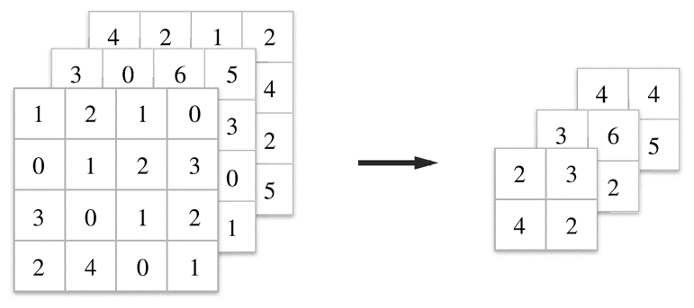
다시 그린 그림 · 누르면 원본그림 읽기: 왼쪽 3장(각 4×4) → 오른쪽 3장(각 2×2). 맨 앞 채널은 23쪽과 같아 출력 [[2, 3], [4, 2]]. 가운데 채널은 첫 행 3 0 6 5 → 출력 첫 행 3, 6. 뒤 채널은 첫 행 4 2 1 2 → 출력 첫 행 4, 4(가려진 칸에 4가 있음). 나머지는 가려져 있습니다.
모양으로 쓰면 (C, H, W) → (C, OH, OW). 예: (3, 4, 4) → (3, 2, 2).
풀링 계층의 특징 ③ 입력의 작은 변화에 덜 민감
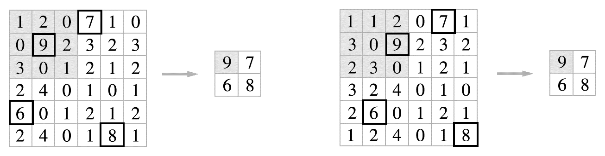
다시 그린 그림 · 누르면 원본Pooling is robust to small variations in the input, so the output does not change significantly. (교안 24쪽 그림 설명)
- 3×3 최대 풀링, 스트라이드 3: 6×6 → 6 − 33 + 1 = 2 → 2×2.
- 오른쪽 입력 = 왼쪽 입력을 한 칸 오른쪽으로 민 것(맨 왼쪽에 새 열이 들어옴, Python 확인).
- 두 출력 모두 [[9, 7], [6, 8]](Python 검산). 최댓값이 한 칸 밀려도 같은 창 안에 남기 때문입니다.
항상 같지는 않습니다 (보충): 두 칸을 밀면 9가 오른쪽 위 창(4–6열)으로 넘어가 출력이 바뀝니다. 교안도 "덜 민감하다(less sensitive)"라고 했지 "변하지 않는다"고 하지 않았습니다.
Part 2 정리 (1) — 합성곱 계층의 계산
- 합성곱: 필터를 입력 위에 놓고 같은 자리끼리 곱해서 모두 더함(단일 곱셈-누산, FMA) → 한 칸씩 옮기며 반복. 필터 값 = 학습되는 가중치, 편향은 필터 하나에 하나(06–08).
- 패딩 P: 둘레를 0으로 채워 출력 크기를 키우거나 유지. 스트라이드 S: 필터를 옮기는 간격, 커지면 출력이 작아짐(09–10).
- 출력 크기 OH = H + 2P − FHS + 1, OW = W + 2P − FWS + 1 (11).
| 교안 예 | 입력 | 필터 | P, S | 출력 | 섹션 |
|---|---|---|---|---|---|
| 기본 합성곱 (11–13쪽) | 4×4 | 3×3 | 0, 1 | [[15, 16], [6, 15]] | 06–07 |
| 편향 3 (14쪽) | 4×4 | 3×3 | 0, 1 | [[18, 19], [9, 18]] | 08 |
| 패딩 (15쪽) | 4×4 | 3×3 | 1, 1 | 4×4, 가운데 2×2 = 15 16 6 15 | 09 |
| 스트라이드 (16쪽) | 7×7 | 3×3 | 0, 2 | 3×3, 첫 행 15 17 15 | 10 |
| 3차원 (18–19쪽) | 3×4×4 | 3×3×3 | 0, 1 | [[63, 55], [18, 51]] 1장 | 12 |
Part 2 정리 (2) — 모양 · 매개변수 · 풀링
- 3차원 합성곱: 채널마다 합성곱 → 더해서 1장. 입력 채널 수 = 필터 채널 수(12).
- 모양: (C, H, W) ⊛ (FN, C, FH, FW) → (FN, OH, OW) + (FN, 1, 1) → (FN, OH, OW). 출력 채널 수 = 필터 개수 FN(13). 배치면 앞에 N.
- 매개변수 수 = FN × C × FH × FW + FN. 입력 크기와 무관(13, 보충).
- 풀링: 영역의 최댓값(또는 평균)으로 높이·너비를 줄임. 매개변수 0, 채널 수 유지, 작은 변화에 덜 민감(14).
CNN이 보는 것
CNN 시각화 — 1층 필터는 무엇을 보나 Visualization of CNNs
| 교안 문장 | 뜻 |
|---|---|
| What exactly are convolutional layers looking at in the input image? | 합성곱 계층은 입력 이미지에서 정확히 무엇을 보고 있을까요? |
| Although the elements of the weights are real numbers, they are visualized as images by normalizing the values so that the smallest value (0) appears as black and the largest value (255) appears as white. | 가중치(필터 값)는 실수지만, 가장 작은 값을 0(검정), 가장 큰 값을 255(흰색)로 맞춰(정규화) 흑백 이미지로 그렸습니다. |

왼쪽 Before training: 필터 30개(8, 8, 8, 6개씩 네 줄, 판독). 무작위로 초기화해서(→ P4 11) 흑백이 규칙 없이 흩어진 잡음입니다.
오른쪽 After training: 흰 영역과 검은 영역이 덩어리져 에지edge, 색이 바뀌는 경계와 블롭blob, 국소적인 덩어리 모양이 나타납니다 (용어는 책 기준, 보충).
층이 깊어지면 추출하는 특징이 바뀐다 How Extracted Features Change with Layer Depth
합성곱 계층을 여러 겹 쌓아 신경망을 깊게 하면 점점 더 복잡하고 추상적인 특징을 뽑을 수 있습니다 Stacking multiple convolutional layers increases the depth of the network, allowing it to extract increasingly complex and abstract features.

출처: tvirdi.github.io (교안 26쪽)
| 패널 | 보이는 것 (판독) |
|---|---|
| low-level (앞쪽 층) | 여러 방향의 줄무늬(에지), 색 경계, 단색 얼룩 |
| mid-level (가운데 층) | 선·곡선·원·격자 무늬, 질감(텍스처) 조각 — 에지가 조합된 모양 |
| high-level (뒤쪽 층) | 눈, 얼굴 일부, 바퀴, 벌집 같은 물체의 부분 |
흐름: 단순한 에지 → 텍스처·부분 모양 → 물체 수준. 앞 층이 만든 특징 맵이 다음 층의 입력이 되므로(→ 13), 뒤 층은 앞 층 특징의 조합을 봅니다 (보충).
반대로 바꾸면 틀림 (추측): "앞쪽 층일수록 추상적인 특징" — 틀림. 앞쪽은 저수준(에지), 뒤쪽이 고수준(물체).
사람 뇌의 시각 체계 Visualization System in Human Brain
사람의 시각 체계도 계층적으로 처리하면서 점점 복잡한 특징을 뽑습니다. CNN이 동작하는 방식과 비슷합니다 The human visual system extracts increasingly complex features through hierarchical processing, similar to how CNNs work.
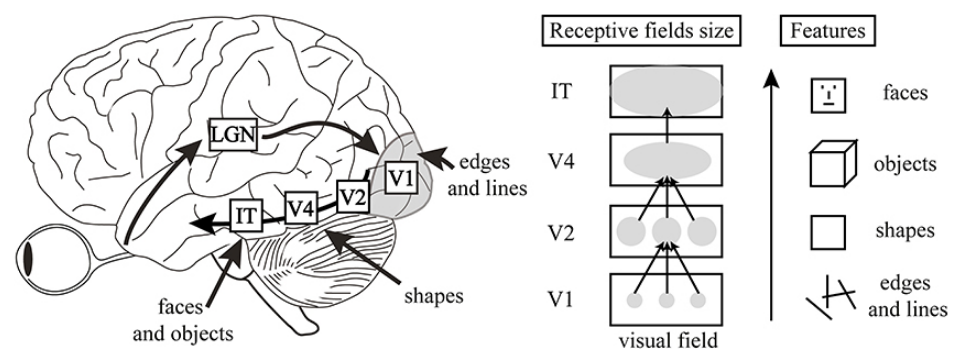
출처: msail.github.io (교안 27쪽)
뇌와 CNN 나란히 보기 — 수용 영역 receptive field
그림 읽기 (왼쪽 → 오른쪽 세 부분)
| 부분 | 내용 |
|---|---|
| 뇌 측면 | 눈 → LGN(외측슬상핵) → 뒤통수의 V1 → V2 → V4 → IT. 화살표 라벨: V1 쪽 edges and lines, V2·V4 쪽 shapes, IT 쪽 faces and objects |
| Receptive fields size | 아래 V1의 작은 원(수용 영역) 여러 개가 모여 V2의 큰 원, V4의 더 큰 타원, IT의 가장 큰 타원 → 위로 갈수록 수용 영역이 커짐 |
| Features | edges and lines → shapes → objects → faces |
수용 영역 = 뉴런 하나가 반응하는 시야(입력)의 범위. CNN에서는 출력 한 칸이 영향을 받는 입력 영역입니다 (보충).
| 사람 뇌 | CNN (대응은 보충) |
|---|---|
| V1: edges and lines | 앞쪽 합성곱 층: 에지·블롭(15) |
| V2·V4: shapes | 가운데 층: 텍스처·부분 모양 |
| IT: objects, faces | 뒤쪽 층: 물체 수준 특징 |
| 위로 갈수록 수용 영역 커짐 | 층을 쌓을수록 한 칸이 보는 입력 범위 커짐 |
1층 출력 한 칸 = 입력 3×3을 봄 → 2층 = 5×5 → 3층 = 7×7. 층마다 FH − 1 = 2칸씩 넓어집니다: 1 + L × 2. 풀링을 끼우면 더 빨리 넓어집니다.
Part 3 정리 — CNN이 보는 것
- 필터(가중치)는 실수지만 최솟값 → 0(검정), 최댓값 → 255(흰색)로 정규화해 이미지로 볼 수 있음(15, 25쪽).
- 1층 필터: 학습 전 = 무작위 잡음, 학습 후 = 에지·블롭 같은 규칙적인 무늬(15).
- 층이 깊어질수록 low-level(에지) → mid-level(텍스처·부분) → high-level(물체)로 복잡·추상적인 특징(15, 26쪽).
- 사람의 시각 체계도 V1(edges and lines) → V2·V4(shapes) → IT(objects, faces)로 계층적 처리, 위로 갈수록 수용 영역이 커짐 — CNN과 비슷(16, 27쪽).
다음 Part 4는 이 구조를 실제로 쌓은 대표 CNN(LeNet, AlexNet, VGGNet, ResNet)입니다(→ 17–21). 각 층의 출력 크기와 매개변수 수는 Part 2의 식으로 다시 계산합니다.
대표 CNN
ImageNet 대회 ImageNet Challenge (ILSVRC)
| 교안 원문 | 번역 |
|---|---|
| Fei-Fei Li believed that AI lacked what humans naturally have: rich visual experience. | 페이페이 리(Fei-Fei Li)는 AI에 사람이 자연스럽게 가진 것, 즉 풍부한 시각 경험이 없다고 보았다. |
| In 2007, she launched the ImageNet project to build a massive labeled image dataset that machines could learn from. | 2007년, 기계가 학습할 수 있는 라벨이 붙은 대규모 이미지 데이터셋을 만드는 ImageNet 프로젝트를 시작했다. |
| By 2009, her team collected 15 million images categorized into 22,000 object classes. | 2009년까지 이미지 1,500만 장을 2만 2,000개 물체 클래스로 나눠 모았다. |
| All images were manually labeled. | 모든 이미지는 사람이 직접 라벨을 붙였다. |
| Fei-Fei Li publicly released ImageNet to the world. | ImageNet을 누구나 쓸 수 있게 공개했다. |
ImageNet Large Scale Visual Recognition Challenge의 줄임말입니다. ImageNet 가운데 1,000개 클래스를 골라 이미지 분류 성능을 겨룬 대회입니다(2010–2017). AlexNet·VGG의 출력이 1,000개인 이유가 이것입니다(→ 19, 20).
모델이 확률이 높은 순서로 고른 5개 클래스 안에 정답이 없는 비율입니다. 소프트맥스 출력(→ P1 22)을 큰 순서로 5개 본다는 뜻입니다. 작을수록 좋습니다.
우승 모델의 Top-5 error 추이 — 28쪽 그래프 읽기
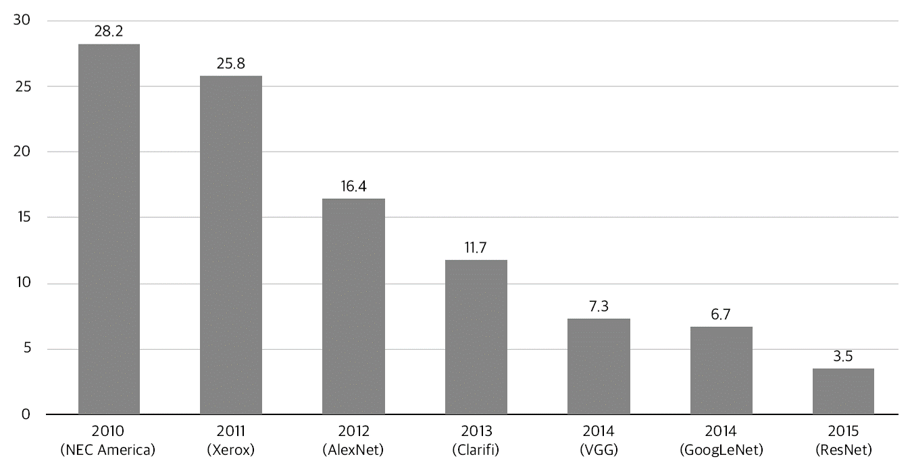
다시 그린 그림 · 누르면 원본- 2012년 AlexNet(→ 19)에서 25.8% → 16.4%로 9.4%p 떨어졌습니다. 전년 대비 9.425.8 ≈ 36% 줄어든 것으로, 깊은 CNN이 처음 우승한 해입니다(→ P1 03 연표의 2012 AlexNet).
- 2014년은 VGG 7.3%(→ 20)와 GoogLeNet 6.7%를 함께 표시했습니다. 2015년 ResNet 3.5%(→ 21)는 2010년의 약 18입니다(28.23.5 ≈ 8.06). 2013년 "Clarifi"는 원문 표기 그대로입니다.
LeNet LeCun et al., 1998
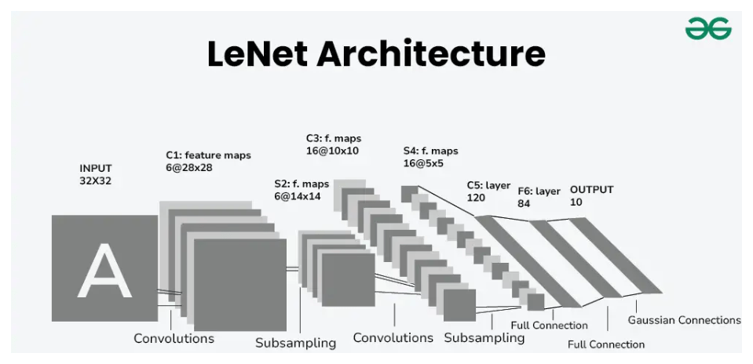
다시 그린 그림 · 누르면 원본| 그림 라벨 | 뜻 |
|---|---|
| 6@28x28 | 28×28 크기의 특징 맵feature map이 6장 |
| Convolutions | 합성곱(→ 06) |
| Subsampling | 풀링(→ 14). LeNet은 평균 풀링 |
| 그림 라벨 | 뜻 |
|---|---|
| Full Connection | 완전연결 계층 = Affine(→ P3 12) |
| Gaussian Connections | 원 논문의 출력층 방식 (보충). 다음 쪽 표는 softmax로 씀 |
| INPUT 32x32 | 손글씨 글자 한 장(흑백, 채널 1) |
손글씨 문서 인식을 위해 만든 최초의 대표 CNN입니다. 합성곱 → 풀링을 두 번 한 뒤 완전연결로 끝나는 구조가 9쪽의 CNN 구조(→ 04)와 같습니다.
LeNet의 층 구성 — 30쪽 표
| Layer | Feature Map | Size | Kernel | Stride | Activation |
|---|---|---|---|---|---|
| Input - Image | 1 | 32 × 32 | - | - | - |
| 1 - Convolution | 6 | 28 × 28 | 5 × 5 | 1 | tanh |
| 2 - Average Pooling | 6 | 14 × 14 | 2 × 2 | 2 | tanh |
| 3 - Convolution | 16 | 10 × 10 | 5 × 5 | 1 | tanh |
| 4 - Avergae Pooling | 16 | 5 × 5 | 2 × 2 | 2 | tanh |
| 5 - Convolution | 120 | 1 × 1 | 5 × 5 | 1 | tanh |
| 6 - FC | - | 84 | - | - | tanh |
| Output - FC | - | 10 | - | - | softmax |
| 열 | 뜻 |
|---|---|
| Feature Map | 출력 채널 수 = 필터 수 FN(→ 13) |
| Size | 출력 특징 맵의 OH × OW |
| Kernel Size | 필터(풀링 창) 크기 FH × FW |
| Activation | 활성화 함수. 시그모이드 계열인 tanh |
- 패딩은 모두 0입니다(표에 열이 없음).
- 5층 C5는 5×5 입력에 5×5 필터라 출력이 1×1 → 사실상 완전연결과 같습니다. 그래서 29쪽 그림은 C5를 "layer 120"으로 그렸습니다.
- 4행 "Avergae"는 Average의 오타(원문 그대로 옮김).
LeNet 크기 따라가기 1단계 — C1(합성곱), S2(풀링)
= 32 + 0 − 51 + 1 = 28
출력 채널 = 필터 수 = 6 → 6 × 28 × 28. 패딩이 없으니 한 번에 FH − 1 = 4칸씩 줄어듭니다.
풀링은 채널마다 따로 하므로 채널 수 6 그대로(→ 14) → 6 × 14 × 14. 창 2, 스트라이드 2면 가로·세로가 절반.
LeNet 크기 따라가기 2단계 — C3(합성곱), S4(풀링)
입력이 6채널이므로 필터 하나도 6 × 5 × 5(채널 수를 맞춤, → 12). 필터 16개 → 16 × 10 × 10.
채널 16 그대로 → 16 × 5 × 5. 원소 수 16 × 5 × 5 = 400.
LeNet 크기 따라가기 3단계 — C5, F6, 출력
→ 120 × 1 × 1. 필터가 입력 전체(16 × 5 × 5 = 400개)를 한 번에 덮으므로 400 → 120 완전연결과 같은 계산입니다.
120개를 한 줄로 편 벡터(평탄화) → 84개(tanh) → 10개(softmax, 숫자 0–9의 확률, → P1 22).
흐름 요약: 1 × 32 × 32 → 6 × 28 × 28 → 6 × 14 × 14 → 16 × 10 × 10 → 16 × 5 × 5 → 120 → 84 → 10
LeNet의 매개변수 수 (보충) 계산 연습
| 층 | 식 | 개수 |
|---|---|---|
| C1 합성곱 | 가중치 6 × 1 × 5 × 5 + 편향 6 | 156 |
| S2 풀링 | 학습하는 값 없음 | 0 |
| C3 합성곱 | 16 × 6 × 5 × 5 + 16 | 2,416 |
| S4 풀링 | 없음 | 0 |
| C5 합성곱 | 120 × 16 × 5 × 5 + 120 | 48,120 |
| F6 완전연결 | 120 × 84 + 84 | 10,164 |
| 출력 완전연결 | 84 × 10 + 10 | 850 |
| 합계 | 61,706 |
합성곱: FN × C × FH × FW + FN
필터 수 × 입력 채널 × 필터 높이 × 필터 폭, 편향은 필터마다 1개
완전연결: 입력 수 × 출력 수 + 출력 수
W 모양(입력 × 출력) + b(→ P1 18)
- 합성곱 매개변수는 입력 크기(H, W)와 상관없음 — 필터 크기와 채널 수만으로 정해집니다.
- 위 값은 C3가 6채널 전부와 연결된다고 본 계산입니다. 원 논문의 C3는 채널 일부만 연결해 1,516개입니다(보충). 교안은 매개변수 수를 다루지 않습니다.
AlexNet Krizhevsky, Sutskever & Hinton, 2012
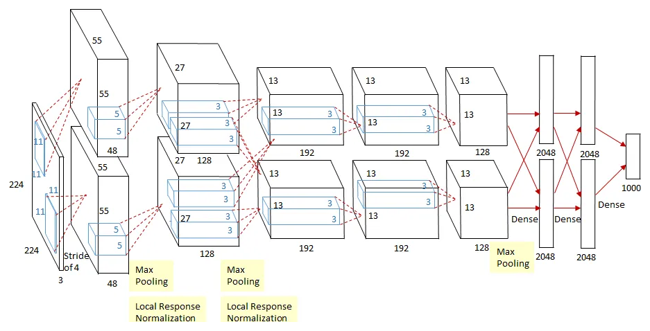
다시 그린 그림 · 누르면 원본왼쪽 → 오른쪽으로 읽습니다. 위·아래 두 갈래는 GPU 두 대에 나눠 계산한 것입니다(33쪽 5번). 파란 상자 = 다음 층 필터 크기, 빨간 점선 = 필터가 닿는 범위, 노란 라벨 = 그 층 뒤에 하는 처리.
AlexNet 그림 읽기 — 두 갈래를 합치면
| 그림 (위 + 아래) | 합친 채널 |
|---|---|
| 224 × 224 × 3, 11×11, Stride of 4 | 컬러 입력 3채널(→ 03) |
| 55 × 55 × 48 두 개 | 48 × 2 = 96 |
| 27 × 27 × 128 두 개 | 128 × 2 = 256 |
| 13 × 13 × 192 두 개 (2번) | 192 × 2 = 384 |
| 13 × 13 × 128 두 개 | 128 × 2 = 256 |
| Dense 2048 두 개 (2번) | 2048 × 2 = 4096 |
| Dense → 1000 | ILSVRC 클래스 수(→ 17) |
합친 채널 96 → 256 → 384 → 384 → 256과 4096 → 4096 → 1000이 다음 장 32쪽 표의 Feature Map 열과 같습니다.
입력이 32 × 32 흑백 → 227 × 227 컬러, 출력이 10 → 1,000, 첫 필터가 11 × 11로 큽니다. 활성화는 tanh → ReLU, 풀링은 평균 → 최대.
AlexNet의 층 구성 — 32쪽 표
| Layer | Feature Map | Size | Kernel | Stride | Activation | |
|---|---|---|---|---|---|---|
| Input | Image | 1 | 227 × 227 × 3 | - | - | - |
| 1 | Convolution | 96 | 55 × 55 × 96 | 11 × 11 | 4 | relu |
| Max Pooling | 96 | 27 × 27 × 96 | 3 × 3 | 2 | relu | |
| 2 | Convolution | 256 | 27 × 27 × 256 | 5 × 5 | 1 | relu |
| Max Pooling | 256 | 13 × 13 × 256 | 3 × 3 | 2 | relu | |
| 3 | Convolution | 384 | 13 × 13 × 384 | 3 × 3 | 1 | relu |
| 4 | Convolution | 384 | 13 × 13 × 384 | 3 × 3 | 1 | relu |
| 5 | Convolution | 256 | 13 × 13 × 256 | 3 × 3 | 1 | relu |
| Max Pooling | 256 | 6 × 6 × 256 | 3 × 3 | 2 | relu | |
| 6 | FC | - | 9216 | - | - | relu |
| 7 | FC | - | 4096 | - | - | relu |
| 8 | FC | - | 4096 | - | - | relu |
| Output | FC | - | 1000 | - | - | Softmax |
- 합성곱 5개 + 완전연결 3개(4096, 4096, 1000) = 가중치 층 8개 (보충, 원 논문).
- 6행 9216은 마지막 풀링 출력 6 × 6 × 256을 평탄화한 개수입니다(→ 05). 학습하는 층이 아니라 입력 벡터의 길이로 읽습니다.
- 그림의 입력은 224, 표는 227 — 계산으로 맞는 쪽은 227(다음 장).
- 풀링 행의 relu는 풀링 자체의 활성화가 아니라 바로 앞 합성곱 뒤의 ReLU로 읽습니다. 풀링에는 학습하는 값도 활성화도 없습니다.
AlexNet 출력 크기 계산 — 표의 숫자 확인하기
| 층 | FH, S, P | OH = H + 2P − FHS + 1 | 출력 |
|---|---|---|---|
| 합성곱 1 | 11, 4, 0 | 227 − 114 + 1 = 2164 + 1 | 55 |
| 최대 풀링 | 3, 2, 0 | 55 − 32 + 1 | 27 |
| 합성곱 2 | 5, 1, 2 | 27 + 4 − 51 + 1 | 27 |
| 최대 풀링 | 3, 2, 0 | 27 − 32 + 1 | 13 |
| 합성곱 3–5 | 3, 1, 1 | 13 + 2 − 31 + 1 | 13 |
| 최대 풀링 | 3, 2, 0 | 13 − 32 + 1 | 6 |
224 − 114 + 1 = 2134 + 1 = 54.25 → 정수가 아님. 표의 227이어야 55가 됩니다. 원 논문 그림의 224와 실제 계산이 다른 것으로 널리 알려져 있습니다 (보충).
- 패딩 2(합성곱 2)와 1(합성곱 3–5)은 표에 없습니다. 표의 크기(27, 13)가 그대로 유지되려면 이 값이어야 합니다(보충, 원 논문 구현 기준).
- 풀링 창 3에 스트라이드 2 → 창이 한 칸씩 겹침 = 33쪽의 overlapping pooling.
- 마지막: 6 × 6 × 256 = 9,216 → 평탄화.
AlexNet의 매개변수 수 (보충) 계산 연습
| 층 | FN × C × FH × FW + FN (FC: 입력 × 출력 + 출력) | 개수 |
|---|---|---|
| 합성곱 1 | 96 × 3 × 11 × 11 + 96 | 34,944 |
| 합성곱 2 | 256 × 96 × 5 × 5 + 256 | 614,656 |
| 합성곱 3 | 384 × 256 × 3 × 3 + 384 | 885,120 |
| 합성곱 4 | 384 × 384 × 3 × 3 + 384 | 1,327,488 |
| 합성곱 5 | 256 × 384 × 3 × 3 + 256 | 884,992 |
| FC 6 | 9216 × 4096 + 4096 | 37,752,832 |
| FC 7 | 4096 × 4096 + 4096 | 16,781,312 |
| FC 8 | 4096 × 1000 + 1000 | 4,097,000 |
| 합계 | 62,378,344 |
합계 약 6,200만 개. 그중 완전연결 3층이 약 94%, FC 6 하나만 약 60.5%입니다. 합성곱 층은 필터를 모든 위치에서 같이 쓰기 때문에 매개변수가 적습니다(→ 08).
매개변수가 많은 완전연결 층에서 과적합이 생기기 쉬워, 33쪽 2번처럼 그 층에 드롭아웃을 넣었습니다(→ P4 21, 23).
GPU 두 대로 나눈 원래 구조(합성곱 2·4·5는 자기 GPU의 절반 채널만 봄)로 세면 60,965,224개로, 원 논문의 "6천만 개"와 맞습니다.
AlexNet의 핵심 혁신 5가지 — 33쪽
| 교안 원문 | 번역 | 앞 교안과 연결 |
|---|---|---|
| 1. Uses the ReLU activation function, enabling faster convergence and alleviating the vanishing-gradient problem. | ReLU를 써서 더 빨리 수렴하고 기울기 소실 문제를 줄였다. | LeNet은 tanh. ReLU(→ P1 16), 시그모이드의 기울기 소실(→ P4 12) |
| 2. Employs dropout in the fully connected layers to reduce over-fitting by randomly disabling units during training. | 완전연결 층에 드롭아웃을 써서 훈련 중 뉴런을 무작위로 끄고 과적합을 줄였다. | 드롭아웃(→ P4 23). 매개변수 94%가 FC에 있음(앞 장) |
| 3. Utilizes data augmentation to effectively increase training set variability and improve generalization. | 데이터 증강data augmentation으로 훈련 데이터를 다양하게 만들어 일반화를 높였다. | 증강: 원본을 뒤집기·자르기 등으로 바꿔 데이터를 늘림 (보충). 일반화(→ P4 21) |
| 4. Introduces overlapping pooling and local response normalization (LRN) to improve feature generalization. | 겹치는 풀링과 국소 응답 정규화(LRN)를 도입했다. | 창 3 > 스트라이드 2라 겹침(앞 장). LRN: 이웃 채널 값으로 나눠 크기를 맞춤 (보충) |
| 5. Splits the model across multiple GPUs (two GPUs in the original implementation) to make training of a large network feasible. ▶ GTX 580 | 모델을 여러 GPU(원래 구현은 2대)에 나눠 큰 신경망의 학습을 가능하게 했다. 사용 GPU: GTX 580. | 31쪽 그림의 위·아래 두 갈래 |
VGGNet Simonyan & Zisserman, 2014
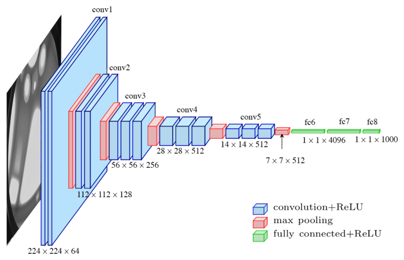
다시 그린 그림 · 누르면 원본| 단계 | 블록 | 출력 (그림 라벨) |
|---|---|---|
| conv1 | 파랑 2 | 224 × 224 × 64 |
| conv2 | 빨강 1 + 파랑 2 | 112 × 112 × 128 |
| conv3 | 빨강 1 + 파랑 3 | 56 × 56 × 256 |
| conv4 | 빨강 1 + 파랑 3 | 28 × 28 × 512 |
| conv5 | 빨강 1 + 파랑 3 | 14 × 14 × 512 |
| pool | 빨강 1 | 7 × 7 × 512 |
| fc6, fc7, fc8 | 초록 3 | 1 × 1 × 4096, 4096, 1000 |
풀링 때마다 가로·세로는 절반(224 → 112 → 56 → 28 → 14 → 7), 채널은 두 배(64 → 128 → 256 → 512). 합성곱 2 + 2 + 3 + 3 + 3 = 13층 + 완전연결 3층 = 16 → VGG16.
VGGNet의 층 구성 — 35쪽 표
| Layer | Feature Map | Size | Kernel | Stride | Activation | |
|---|---|---|---|---|---|---|
| Input | Image | 1 | 224 × 224 × 3 | - | - | - |
| 1 | 2 X Convolution | 64 | 224 × 224 × 64 | 3 × 3 | 1 | relu |
| Max Pooling | 64 | 112 × 112 × 64 | 3 × 3 | 2 | relu | |
| 3 | 2 X Convolution | 128 | 112 × 112 × 128 | 3 × 3 | 1 | relu |
| Max Pooling | 128 | 56 × 56 × 128 | 3 × 3 | 2 | relu | |
| 5 | 2 X Convolution | 256 | 56 × 56 × 256 | 3 × 3 | 1 | relu |
| Max Pooling | 256 | 28 × 28 × 256 | 3 × 3 | 2 | relu | |
| 7 | 3 X Convolution | 512 | 28 × 28 × 512 | 3 × 3 | 1 | relu |
| Max Pooling | 512 | 14 × 14 × 512 | 3 × 3 | 2 | relu | |
| 10 | 3 X Convolution | 512 | 14 × 14 × 512 | 3 × 3 | 1 | relu |
| Max Pooling | 512 | 7 × 7 × 512 | 3 × 3 | 2 | relu | |
| 13 | FC | - | 25088 | - | - | relu |
| 14 | FC | - | 4096 | - | - | relu |
| 15 | FC | - | 4096 | - | - | relu |
| Output | FC | - | 1000 | - | - | Softmax |
- Layer 번호(1, 3, 5, 7, 10, 13…)는 앞까지 쌓인 층 수 + 1입니다.
- 13행 25088 = 7 × 7 × 512를 평탄화한 길이(AlexNet의 9216과 같은 역할).
- 색칠한 줄 주의: 34쪽 그림과 원 논문의 VGG16은 256채널 블록이 3 X Convolution입니다. 표의 "2 X"를 따르면 합성곱이 12개가 됩니다.
- 풀링 3 × 3, 스트라이드 2로 하면 224 − 32 + 1 = 111.5로 112가 안 나옵니다. 원 논문은 2 × 2, 스트라이드 2: 224 − 22 + 1 = 112 (→ 24 확인 필요).
VGG16의 크기와 매개변수 수 (보충) 계산 연습
| 블록 | 합성곱 (3×3, S 1, P 1) | 출력 | 매개변수 |
|---|---|---|---|
| 1 | 3 → 64, 64 → 64 | 224 × 224 × 64 | 38,720 |
| 2 | 64 → 128, 128 → 128 | 112 × 112 × 128 | 221,440 |
| 3 | 128 → 256, 256 → 256 × 2 | 56 × 56 × 256 | 1,475,328 |
| 4 | 256 → 512, 512 → 512 × 2 | 28 × 28 × 512 | 5,899,776 |
| 5 | 512 → 512 × 3 | 14 × 14 × 512 | 7,079,424 |
| fc6 | 25088 × 4096 + 4096 | 4096 | 102,764,544 |
| fc7 | 4096 × 4096 + 4096 | 4096 | 16,781,312 |
| fc8 | 4096 × 1000 + 1000 | 1000 | 4,097,000 |
| 합계 | 138,357,544 |
패딩 1이면 크기가 그대로, 크기를 줄이는 일은 풀링만 합니다(→ 09).
첫 합성곱: 64 × 3 × 3 × 3 + 64 = 1,792. 합계 약 1억 3,836만 개 중 fc6 하나가 약 74%입니다. AlexNet처럼 매개변수 대부분이 완전연결 층에 있습니다.
VGGNet의 핵심 혁신 — 36쪽
| 교안 원문 | 번역 |
|---|---|
| 1. Uses very small convolution filters (3×3) stacked repeatedly instead of large filters. | 큰 필터 대신 아주 작은 3×3 필터를 여러 번 쌓아 쓴다. |
| 2. Employs deep architecture (16 or 19 weight layers), demonstrating that depth improves performance. | 가중치 층 16개 또는 19개의 깊은 구조로, 깊이가 성능을 높인다는 것을 보였다. |
"가중치 층"은 매개변수가 있는 층(합성곱 + 완전연결)만 셉니다. 풀링은 세지 않습니다. VGG16 = 13 + 3, VGG19 = 16 + 3(→ 21의 VGG-19).
(보충) 3×3을 두 번 쌓으면 출력 한 칸이 입력 5×5 범위를 봅니다(수용 영역receptive field, → 16). 채널 수가 C로 같을 때 가중치는 2 × 9C2 = 18C2 < 5×5 한 번의 25C2. C = 64면 73,728 < 102,400. ReLU도 한 번 더 들어갑니다. 세 번 쌓으면 7×7 범위, 27C2 < 49C2.
ResNet He et al., 2016 — 37쪽 구조 비교 그림
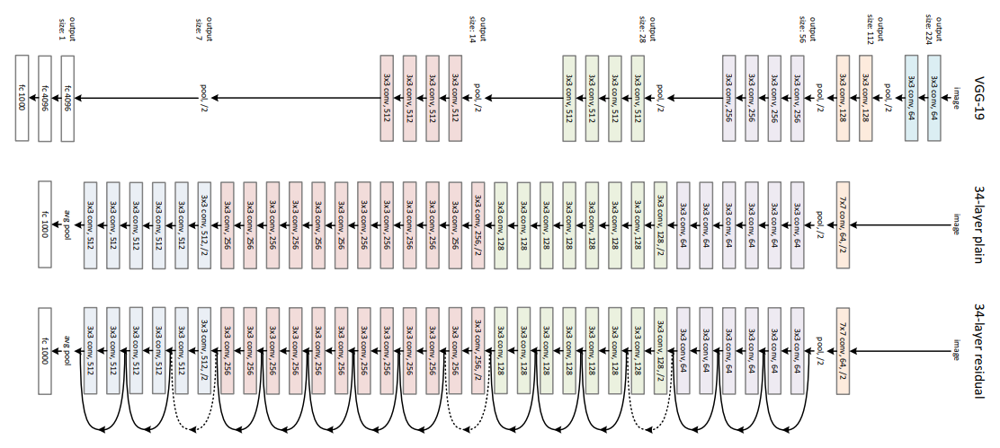
다시 그린 그림 · 누르면 원본세 구조는 VGG-19, 34-layer plain(일반 구조), 34-layer residual(ResNet)입니다. 34-layer residual의 곡선 화살표가 스킵 연결입니다. 교안 원본은 이 그림을 90° 돌려 넣어 오른쪽(image) → 왼쪽(fc 1000)으로 읽고, 다시 그린 그림은 위 → 아래(왼쪽 절반 다음 오른쪽 절반)로 읽습니다.
ResNet 그림 읽기 — 세 구조의 층 수
| 구조 | 층 구성 (입력 쪽부터) | 가중치 층 수 |
|---|---|---|
| VGG-19 | 3×3 합성곱 64 × 2 · 128 × 2 · 256 × 4 · 512 × 4 · 512 × 4, 사이마다 풀링 → fc 4096 · 4096 · 1000 | 16 + 3 = 19 |
| 34-layer plain | 7×7 합성곱 64(크기 절반) → 풀링 → 3×3 합성곱 64 × 6 · 128 × 8 · 256 × 12 · 512 × 6 → 평균 풀링 → fc 1000 | 1 + 32 + 1 = 34 |
| 34-layer residual | plain과 같은 층 + 두 층마다 지름길(곡선 화살표) 3 + 4 + 6 + 3 = 16개. 점선 3개 = 채널이 늘고 크기가 절반이 되는 곳(64 → 128, 128 → 256, 256 → 512) | 34 |
- plain과 residual은 층이 똑같고 지름길만 다릅니다. 같은 층 수에서 성능을 비교하면 차이가 지름길 덕분임을 알 수 있게 짠 비교입니다 (보충).
- 크기 흐름: 224 → 112(7×7, 스트라이드 2) → 56(풀링) → 28 → 14 → 7. (보충) 7×7 합성곱은 패딩 3이라 224 + 6 − 72 + 1 = 112.5 → 구현에서는 내림해 112(나누어떨어지지 않는 경우, → 11).
깊을수록 좋을까? — 성능 저하 문제
While deeper networks usually improve performance, traditional architectures eventually suffer from performance degradation as depth increases, which ResNet effectively overcomes.
깊은 신경망은 보통 성능이 좋아지지만, 기존 구조는 깊이가 늘어나면 결국 성능 저하degradation를 겪는다. ResNet은 이 문제를 효과적으로 극복했다.
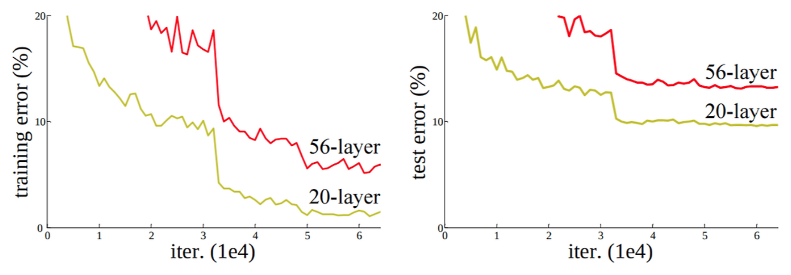
| 그림 요소 | 뜻 |
|---|---|
| 왼쪽 · 오른쪽 | 훈련 오류 · 시험 오류(%) |
| 가로축 iter. (1e4) | 반복 횟수 × 104(0–6만 번) |
| 빨강 56-layer | 끝 무렵 훈련 약 6%, 시험 약 13% |
| 노랑 20-layer | 훈련 약 1–2%, 시험 약 10% |
과적합이 아닙니다. 과적합이면 훈련 오류는 낮고 시험 오류만 높습니다(→ P4 21). 여기서는 56층이 훈련 오류까지 더 높습니다 → 깊어질수록 학습 자체가 어려워진 것입니다. 값은 그래프를 눈으로 읽은 근삿값, 데이터셋 CIFAR-10은 원 논문 기준(보충).
잔차 블록과 스킵 연결 Residual Block · Skip Connection
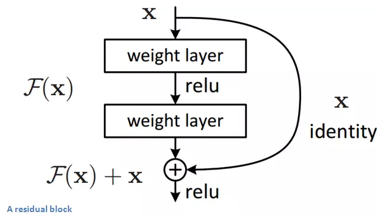
다시 그린 그림 · 누르면 원본Skip connections let the network reuse earlier information, helping deeper models learn without losing important signals.
스킵 연결은 신경망이 앞의 정보를 다시 쓰게 해서, 깊은 모델이 중요한 신호를 잃지 않고 학습하도록 돕는다.
| F(x) | weight layer 두 개(합성곱)를 거친 값 = 블록이 학습하는 부분, 잔차residual |
| x identity | 입력을 그대로(항등) 덧셈으로 보내는 지름길 |
| F(x) + x | 더하려면 F(x)와 x의 모양이 같아야 함. 모양이 바뀌는 곳이 37쪽의 점선 (보충) |
- (보충) F(x) = 0이면 y = ReLU(x)로 입력이 그대로 넘어갑니다. 층을 더 쌓아도 최소한 앞의 결과는 지킬 수 있어 성능 저하가 줄어듭니다.
- (보충) 역전파에서 덧셈 노드는 기울기를 그대로 양쪽으로 보냅니다(→ P3 06). 그래서 지름길로 기울기가 줄지 않고 앞 층까지 전해져 기울기 소실(→ P4 12)이 줄어듭니다.
잔차 블록 숫자로 한 번 (보충) 이해용 계산
| 원소 | x | F(x) | F(x) + x | y = ReLU |
|---|---|---|---|---|
| 1 | 1 | 0.5 | 1.5 | 1.5 |
| 2 | −2 | 0.5 | −1.5 | 0 |
| 3 | 3 | −4 | −1 | 0 |
F(x)는 x를 얼마나 고칠지만 담습니다. 위 예에서 F(x) = (0.5, 0.5, −4)는 x = (1, −2, 3)에 더해지는 차이입니다.
F(x) = (0, 0, 0)이면 y = ReLU(1, −2, 3) = (1, 0, 3)입니다. 잔차가 0이면 블록이 입력을 거의 그대로 전달합니다.
값은 numpy로 계산해 확인했습니다. 교안에는 숫자 예가 없습니다.
대표 CNN 한눈에 비교
| LeNet | AlexNet | VGG16 | ResNet (34층) | |
|---|---|---|---|---|
| 연도 | 1998 | 2012 (ILSVRC 우승) | 2014 | 2015 대회 · 2016 논문 |
| 입력 | 32 × 32 × 1 | 227 × 227 × 3 (그림 224) | 224 × 224 × 3 | 224 × 224 × 3 (보충) |
| 가중치 층 | 합성곱 3 + FC 2 | 합성곱 5 + FC 3 = 8 | 합성곱 13 + FC 3 = 16 | 합성곱 33 + FC 1 = 34 |
| 필터 | 5 × 5 | 11 × 11, 5 × 5, 3 × 3 | 3 × 3만 | 7 × 7 하나 + 3 × 3 |
| 풀링 | 평균 2 × 2 | 최대 3 × 3, S 2 (겹침) | 최대 (원 논문 2 × 2) | 최대 1번 + 끝의 평균 |
| 활성화 | tanh | ReLU | ReLU | ReLU |
| 핵심 | 합성곱 + 풀링 구조의 시작 | ReLU, 드롭아웃, 증강, 겹친 풀링·LRN, GPU 2대 | 작은 3 × 3을 깊게 쌓음 | 스킵 연결(잔차 블록)로 성능 저하 해결 |
| 매개변수 (보충) | 61,706 | 약 6,000만 | 138,357,544 | — |
| Top-5 error | — | 16.4% | 7.3% | 3.5% |
LeNet은 ILSVRC 이전 모델이라 Top-5 error가 없습니다. ResNet 매개변수 수는 교안 정보만으로 정확히 셀 수 없어 비워 두었습니다. ResNet의 Top-5 3.5%는 28쪽 그래프 값입니다.
Part 4 정리 — 대표 CNN
- ImageNet: 페이페이 리, 2007 시작, 2009년까지 1,500만 장 · 2만 2,000 클래스, 모두 사람이 라벨. ILSVRC 우승 Top-5 error 28.2%(2010) → 16.4%(2012 AlexNet) → 7.3%(VGG) · 6.7%(GoogLeNet) → 3.5%(2015 ResNet)(17).
- LeNet(1998): 1 × 32 × 32 → 6 × 28 × 28 → 6 × 14 × 14 → 16 × 10 × 10 → 16 × 5 × 5 → 120 → 84 → 10. 5 × 5 합성곱(P 0) + 평균 풀링 2 × 2, tanh. OH = 32 − 51 + 1 = 28(18).
- AlexNet(2012): 227 × 227 × 3, 11 × 11 · 스트라이드 4 → 55. 합성곱 5 + FC 3. 9216 = 6 × 6 × 256(평탄화). 혁신: ReLU, FC에 드롭아웃, 데이터 증강, 겹치는 풀링·LRN, GPU 2대(19).
- VGGNet(2014): 3 × 3 필터만 깊게 쌓음(16 · 19 가중치 층). 3 × 3(P 1)은 크기 유지, 풀링마다 절반, 채널 두 배. 25088 = 7 × 7 × 512. 3 × 3 두 번 = 5 × 5 범위, 가중치 18C2 < 25C2(보충)(20).
- ResNet(2016): 깊어지면 훈련 오류까지 높아지는 성능 저하(과적합 아님, 56층 > 20층). 잔차 블록 y = ReLU(F(x) + x), 스킵 연결로 앞 정보와 기울기를 그대로 전달. 34층 = 1 + 32 + 1, 지름길 16개(21).
- 계산 공식: 출력 크기 H + 2P − FHS + 1, 합성곱 매개변수 FN × C × FH × FW + FN, 완전연결 입력 × 출력 + 출력. 매개변수 대부분은 완전연결 층에 있음(AlexNet 약 94%, VGG16 fc6 약 74%, 보충).
전체 정리 ① — 이미지와 CNN의 큰 그림 (1–10쪽)
- 컴퓨터 비전의 과제: 분류(무엇이), 검출(무엇이 + 어디에, 바운딩 박스), 분할(픽셀마다 클래스 라벨), 캡셔닝(이미지 → 문장), 텍스트로 이미지 생성(01).
- 인식이 어려운 이유 7가지: 시점 변화, 조명, 배경 혼잡, 가려짐, 변형, 클래스 내 다양성, 맥락(02).
- 흑백 = 픽셀 밝기 0(검정) ~ 255(흰색)의 2차원 배열. 컬러 = R·G·B 3채널, H × W × 3의 3차원 텐서. 20쪽부터는 (C, H, W) 순서로 씀(03).
- 지금까지의 신경망 = 완전연결(FC) 계층 = Affine 계층(→ P3 12). CNN은 여기에 합성곱 계층과 풀링 계층을 더함: Conv → ReLU → Pooling 반복, 끝은 Affine → Softmax(04).
- FC의 한계: 이미지를 1차원으로 평탄화해야 해서 공간 구조를 무시 → 국소 근접성, 채널 간 상관, 공간적 국소성을 잃음. 합성곱 계층은 3차원으로 받아 3차원으로 넘겨 공간 구조를 보존(05).
전체 정리 ② — 합성곱과 풀링 (11–24쪽)
- 합성곱 계층의 입력·출력 = 특징 맵(입력 특징 맵, 출력 특징 맵). 필터의 윈도를 옮기며 같은 자리끼리 곱해 모두 더함(FMA). 교안 예 4 × 4 ⊛ 3 × 3 → [[15, 16], [6, 15]](06–07).
- 필터 = 학습되는 가중치, 편향은 필터마다 1개를 모든 칸에 더함: 편향 3 → [[18, 19], [9, 18]](08). 패딩: 둘레를 보통 0으로 채움, 크기 유지·가장자리 정보 보존(09). 스트라이드: 필터를 적용하는 간격(10).
- 출력 크기 OH = H + 2P − FHS + 1, OW = W + 2P − FWS + 1. (4, 4), P 1, S 1, 필터 3 → 4 · (7, 7), P 0, S 2 → 3(11).
- 3차원 합성곱: 채널마다 합성곱한 뒤 같은 위치끼리 더해 1장. 입력 채널 수 = 필터 채널 수. 교안 예 → [[63, 55], [18, 51]](12).
- 블록: (C, H, W) ⊛ (FN, C, FH, FW) → (FN, OH, OW) + 편향 (FN, 1, 1). 출력 채널 수 = 필터 개수 FN. 매개변수 수 = FN × C × FH × FW + FN(보충)(13).
- 풀링: 영역의 최댓값(또는 평균)으로 높이·너비를 줄임. 2 × 2 최대 풀링 → [[2, 3], [4, 2]]. 특징: ① 학습하는 매개변수 없음 ② 채널 수 그대로 ③ 입력의 작은 변화에 덜 민감(14).
전체 정리 ③ — CNN이 보는 것과 대표 CNN (25–39쪽)
- 1층 필터를 이미지로 보면(최솟값 → 0 검정, 최댓값 → 255 흰색) 학습 전 = 잡음, 학습 후 = 에지·블롭. 층이 깊어질수록 저수준 → 고수준의 복잡·추상적인 특징(15). 뇌의 시각 체계도 V1(에지·선) → V2·V4(모양) → IT(물체·얼굴), 위로 갈수록 수용 영역이 커짐(16).
- ImageNet: 1,500만 장, 2만 2,000 클래스, 사람이 라벨. ILSVRC Top-5 error 28.2% → 16.4%(2012 AlexNet) → 7.3%(VGG) → 3.5%(2015 ResNet)(17).
- LeNet(1998): 1 × 32 × 32 → 6 × 28 × 28 → 6 × 14 × 14 → 16 × 10 × 10 → 16 × 5 × 5 → 120 → 84 → 10. 5 × 5 합성곱 + 평균 풀링, tanh(18).
- AlexNet(2012): 227 × 227 × 3, 11 × 11 · 스트라이드 4 → 55. 합성곱 5 + FC 3. ReLU, 드롭아웃, 데이터 증강, 겹치는 풀링·LRN, GPU 2대(19).
- VGGNet(2014): 3 × 3 필터만 깊게(16 · 19 가중치 층). 풀링마다 크기 절반·채널 두 배. 25088 = 7 × 7 × 512(20).
- ResNet(2016): 깊어지면 훈련 오류까지 높아지는 성능 저하(과적합 아님). 잔차 블록 y = ReLU(F(x) + x), 스킵 연결로 앞 정보를 그대로 전달(21).
용어 정리 ① — 이미지와 합성곱
| 컴퓨터 비전computer vision | 컴퓨터가 이미지·영상을 이해하게 하는 분야 |
| 이미지 분류classification | 이미지 전체가 어떤 클래스인지 맞힘 |
| 객체 검출detection | 물체의 클래스와 위치(바운딩 박스) |
| 이미지 분할segmentation | 픽셀마다 클래스 라벨을 붙임 |
| 이미지 캡셔닝captioning | 이미지를 설명하는 문장 생성 |
| 채널channel | 색 성분(R, G, B)이나 특징 맵의 장 수 |
| 완전연결 계층fully connected, Affine | 모든 뉴런이 앞 층 모든 뉴런과 연결 |
| 평탄화flatten | 다차원 데이터를 1차원 벡터로 폄 |
| 공간 정보spatial information | 픽셀의 위치·이웃 관계에 담긴 정보 |
| 합성곱 신경망CNN | 합성곱 계층·풀링 계층을 쓰는 신경망 |
| 합성곱 계층convolutional layer | 필터로 합성곱 연산을 하는 계층 |
| 필터 · 커널filter · kernel | 입력 위를 옮겨 다니며 곱하는 작은 가중치 배열 |
| 특징 맵feature map | 합성곱 계층의 입력·출력 데이터 |
| 윈도window | 필터가 지금 겹쳐 있는 입력 영역 |
| 단일 곱셈-누산FMA | 곱해서 누적해 더하는 연산 |
| 패딩padding | 입력 둘레에 값(보통 0)을 채움 — P |
| 스트라이드stride | 필터를 적용하는 위치 사이의 간격 — S |
| 편향bias | 필터마다 1개, 출력 모든 칸에 더함 |
용어 정리 ② — 풀링과 대표 CNN
| 풀링 계층pooling layer | 영역을 대표값 하나로 요약해 크기를 줄임 |
| 최대 풀링max pooling | 영역의 최댓값 |
| 평균 풀링average pooling | 영역의 평균값 |
| 수용 영역receptive field | 출력 한 칸이 보는 입력 범위. 깊을수록 넓음 |
| (C, H, W) · (N, C, H, W) | 채널·높이·너비 순서, 배치면 앞에 N |
| FN | 필터 개수 = 출력 채널 수 |
| Top-5 error | 상위 5개 예측에 정답이 없는 비율 (보충) |
| ILSVRC · ImageNet | 1,000 클래스 분류 대회 · 1,500만 장 데이터셋 |
| LeNet | 1998, 손글씨 인식, 합성곱 + 평균 풀링, tanh |
| AlexNet | 2012 우승, ReLU · 드롭아웃 · 증강 · GPU 2대 |
| 데이터 증강data augmentation | 원본을 변형해 훈련 데이터를 늘림 |
| 국소 응답 정규화LRN | AlexNet이 쓴 정규화. 이웃 채널 값으로 나눔 (보충) |
| VGGNet | 2014, 3 × 3 필터만 깊게(16 · 19층) |
| ResNet | 2015 우승, 잔차 블록 · 스킵 연결 |
| 잔차 블록residual block | y = ReLU(F(x) + x) |
| 스킵 연결skip connection | 입력을 건너뛰어 출력에 더하는 지름길 |
| 성능 저하degradation | 깊어질수록 훈련 오류까지 커지는 현상 |
확인 필요 ① — 질문할 것과 안내
이 교안에 대한 수업 필기와 교수님 말씀은 아직 없습니다. 중요도 구분은 모두 교안만 보고 정한 것(추측)입니다.
기말 정보: 계산 문제는 대체로 없을 예정이었으나 역전파 계산은 반드시 나온다고 하셨습니다(P3, 11.12 · 11.19). 그래서 이 교안의 계산(합성곱 한 칸, 출력 크기, 채널 합, 풀링, 매개변수 수)도 대비했습니다(추측).
여쭤볼 것: 매개변수 수 계산이 시험 범위인지(교안에는 공식이 없음), AlexNet·VGG 표의 숫자 불일치(④)를 어느 쪽으로 보는지.
- 매개변수 수 공식 FN × C × FH × FW + FN과 LeNet 61,706 · AlexNet 62,378,344 · VGG16 138,357,544(→ 13, 18–20)
- 나누어떨어지지 않을 때: 책은 정수가 되도록 값을 고르라고 하고, 프레임워크는 보통 내림(→ 11, 21)
- 배치 N을 넣은 (N, C, H, W) 모양 흐름: (100, 1, 28, 28) → (100, 30, 24, 24) → 풀링 (100, 30, 12, 12) → 평탄화 4,320(→ 13, 책 기준)
- AlexNet 합성곱 2–5의 패딩 2 · 1(표에 없음, 원 논문 구현)(→ 19)
- Top-5 error의 뜻, ILSVRC가 1,000 클래스라는 것(→ 17)
- 수용 영역(→ 16), 3 × 3 두 번 = 5 × 5 범위, 가중치 18C2 < 25C2(→ 20)
- 잔차 블록이 왜 도움이 되나(F = 0이면 항등, 덧셈 노드의 역전파)(→ 21)
확인 필요 ② — 교안 표기 주의: 1–16쪽
| 교안 | 원문 · 그림 | 읽는 법 · 근거 |
|---|---|---|
| 전체 | 목차 쪽이 없음 | Part 1–4 나눔과 섹션 이름은 이 자료가 정한 것 |
| 4–5쪽 | 어려움 7가지 목록 · 고양이 사진 7장(라벨 없음) | 사진과 항목의 짝은 적혀 있지 않음. 목록 순서대로 대응시킨 것은 추측(→ 02) |
| 6쪽 | 픽셀 배열의 "07", "32" | 인쇄된 그대로 옮김. 세 자리 값이 잘렸을 가능성 있음(→ 03) |
| 7 · 20쪽 | H × W × 3 · (channels, height, width) | 7쪽은 채널이 마지막, 20쪽부터는 처음. 계산은 20쪽 (C, H, W) 기준(→ 03, 13) |
| 11–13쪽 | "convolution" 계산 | 필터를 뒤집지 않고 그대로 곱함(수학에서는 교차상관). 뒤집어 계산하면 [[11, 12], [10, 11]]로 교안의 [[15, 16], [6, 15]]와 다름. 이 교안 방식대로 계산(보충)(→ 06) |
| 12쪽 | FMA(단일 곱셈-누산) | 교안에 없는 용어. 이 자료가 붙인 (보충) 용어(→ 06) |
| 16쪽 | 스트라이드 2 그림의 출력 3 × 3 | 두 칸(15, 17)만 채워져 있음. 나머지 일곱 칸은 이 자료의 계산값(보충) — 전체 [[15, 17, 15], [17, 15, 17], [15, 17, 15]](→ 10) |
확인 필요 ③ — 교안 표기 주의: 17–27쪽
| 교안 | 원문 · 그림 | 읽는 법 · 근거 |
|---|---|---|
| 17쪽 | 예 두 개: (4, 4) P 1 S 1 · (7, 7) P 0 S 2, 필터 (3, 3) | 답이 적혀 있지 않음. 공식으로 4 × 4와 3 × 3(15 · 16쪽 그림과 일치). 패딩 0이면 4 × 4 → 2 × 2(→ 11) |
| 18–19쪽 | 3채널 입력·필터의 가운데·뒤 채널 값 | 대부분 가려져 결과 [[63, 55], [18, 51]]을 처음부터 다시 계산할 수 없음. 앞 채널 몫을 빼면 가운데·뒤 두 채널 합은 [[48, 39], [12, 36]]이어야 함(역산값). 가운데 채널 오른쪽 열 5, 3, 0, 1은 판독이 확실하지 않음. 그래서 채널 합 따라가기는 (보충) 예(결과 [[5, 10], [6, 7]])로 함(→ 12) |
| 21쪽 | "The size of the filter (FN)" | FN은 필터의 크기가 아니라 개수(그림 라벨 "FN개")(→ 13) |
| 23쪽 | 풀링 정의(최대 또는 평균), 그림은 최대 풀링 2 × 2, 스트라이드 2 | 교안은 창 크기와 스트라이드를 글로 적지 않음. 보통 창 크기 = 스트라이드(보충)(→ 14) |
| 24쪽 | 작은 변화에 덜 민감 예시 | 3 × 3 창, 스트라이드 3. 한 칸 밀어도 [[9, 7], [6, 8]]로 같음. 항상 같다는 뜻은 아님(→ 14) |
| 25쪽 | 1층 필터 시각화 | 필터 수는 교안에 없음. 그림에서 세어 30개(8 + 8 + 8 + 6)(→ 15) |
| 27쪽 | 출처 주소 "cnn human visual" | 주소의 밑줄(_)이 빠진 것(cnn_human_visual) |
확인 필요 ④ — 교안 표기 주의: 28–39쪽
| 교안 | 원문 · 그림 | 읽는 법 · 근거 |
|---|---|---|
| 28쪽 | 2013 "Clarifi", 캡션 "winning models" | 정식 표기는 Clarifai. 2014년 분류 부문 우승은 GoogLeNet(6.7%), VGG(7.3%)는 2위인데 함께 표시(보충)(→ 17) |
| 29 · 30쪽 | C5 "layer 120"(그림) · "5 - Convolution"(표), 출력 "Gaussian Connections"(그림) · softmax(표) | C5는 5 × 5 입력에 5 × 5 필터라 1 × 1 출력 = 완전연결과 같은 계산. 출력층은 원 논문 방식과 표가 다름(→ 18) |
| 30쪽 | "4 - Avergae Pooling", 풀링 행 Activation tanh | Average의 오타. 풀링 자체에는 활성화가 없음(원 논문은 풀링 뒤에 활성화를 둠, 보충) |
| 31 · 32쪽 | 입력 224 × 224 × 3(그림) · 227 × 227 × 3(표) | 224 − 114 + 1 = 54.25로 정수가 아님. 227이면 55(→ 19) |
| 32쪽 | 패딩 열 없음, "6 FC 9216", 풀링 행 relu | 합성곱 2는 패딩 2, 3–5는 패딩 1이어야 표의 크기가 나옴. 9216은 평탄화한 길이(FC는 4096, 4096, 1000의 3개). 풀링 행의 relu는 앞 합성곱의 것(→ 19) |
| 35쪽 | Layer 5 "2 X Convolution" | 34쪽 그림·원 논문은 3 X. 표대로면 합성곱 12개(→ 20) |
| 35쪽 | Max Pooling 3 × 3, 스트라이드 2 | 224 − 32 + 1 = 111.5로 112가 안 됨. 원 논문은 2 × 2, 스트라이드 2(→ 20) |
| 37쪽 | 구조 비교 그림 | 교안 원본은 90° 돌려 넣어 오른쪽 → 왼쪽으로 읽음. 글자가 아주 작아 표로 옮김(→ 21) |
| 38쪽 | 20층 · 56층 오류 곡선 | 데이터셋(CIFAR-10)·실험 조건이 교안에 없음. 끝 무렵 값은 눈으로 읽은 근삿값(→ 21) |
예상 문제 안내
중간고사 형식(가장 적절한 것 · 옳지 않은 것 · 모두 고르시오 · OX · 단답 · 짝짓기)으로 15문항을 만들었습니다. 그중 계산 문항 4개(Q5 합성곱 한 칸, Q6 출력 크기, Q8 풀링, Q10 매개변수 수)는 손으로 풀어 보세요.
Part 1(Q1–Q3), Part 2(Q4–Q10), Part 3(Q11), Part 4(Q12–Q15) 순서입니다. 오답 보기는 반대말 바꾸기, 주어 바꾸기, 숫자 바꾸기로 만들었습니다.
수업 필기와 교수님 말씀을 받지 못해 교안만 보고 만든 예상이며 실제 출제와 다를 수 있습니다. 정답 칸을 눌러야 답이 보입니다. 계산 문항의 숫자는 새로 만든 것이고 모두 Python으로 검산했습니다.
(가) 이미지 분류 (나) 객체 검출 (다) 이미지 분할 (라) 이미지 캡셔닝
- 이미지를 설명하는 문장을 만든다.
- 픽셀마다 클래스 라벨을 붙여 이미지를 영역으로 나눈다.
- 이미지 전체가 어떤 클래스인지 하나를 고른다.
- 물체를 찾아 바운딩 박스로 위치를 표시한다.
(1) 흑백 이미지는 픽셀 밝기를 0(흰색)부터 255(검정)까지의 값으로 나타낸 2차원 배열이다.
(2) 컬러 이미지는 R, G, B 세 채널로 이루어진 H × W × 3 모양의 3차원 텐서이다.
(3) 교안 20쪽부터 3차원 데이터는 (채널, 높이, 너비) 순서로 쓴다.
(4) 컬러 이미지의 한 픽셀은 값 하나로 나타낸다.
- 이미지를 1차원 벡터로 평탄화해야 해서 데이터의 공간 구조를 무시한다.
- 가까운 픽셀끼리 값이 비슷하다는 국소 근접성 정보를 잃는다.
- R, G, B 채널 사이의 높은 상관관계 정보를 잃는다.
- 합성곱 계층도 입력을 1차원으로 펴서 받으므로 같은 한계가 있다.
- 합성곱 계층의 입력·출력 데이터를 특징 맵이라고 한다.
- 필터의 값은 사람이 정해 두고 학습 중에 바뀌지 않는다.
- 편향은 필터마다 하나씩 있고, 합성곱 결과의 모든 칸에 같은 값을 더한다.
- 패딩은 출력 특징 맵의 크기를 유지하고 가장자리 정보를 잃지 않으려고 쓴다.
- 스트라이드를 키우면 출력 크기가 커진다.
| 1 | 2 | 0 | 1 |
| 0 | 1 | 3 | 2 |
| 2 | 0 | 1 | 1 |
| 1 | 3 | 0 | 2 |
| 1 | 0 | 1 |
| 0 | 1 | 0 |
| 1 | 0 | 1 |
(2) 입력 32 × 32, 필터 4 × 4, 패딩 1, 스트라이드 2일 때 출력 크기는?
(3) (1)에서 패딩을 0으로 바꾸면 출력 크기는?
- 입력의 채널 수와 필터의 채널 수는 같아야 한다.
- 필터 하나의 결과는 채널마다 따로 남아 C장의 출력이 된다.
- 출력의 채널 수는 필터의 개수 FN과 같다.
- 편향의 모양은 (FN, 1, 1)이다.
- FN은 필터 한 장의 높이를 뜻한다.
(1) 최대 풀링의 결과는? (2) 평균 풀링의 결과는? (3) 이 풀링 계층의 학습하는 매개변수 수는?
| 3 | 1 | 0 | 2 |
| 4 | 6 | 1 | 5 |
| 2 | 0 | 7 | 1 |
| 1 | 8 | 3 | 2 |
- 학습해야 하는 매개변수가 없다.
- 풀링을 하면 채널 수가 절반으로 줄어든다.
- 입력이 조금 바뀌어도 출력이 크게 바뀌지 않는다.
- 영역 안의 값을 최댓값이나 평균으로 요약해 특징 맵의 높이·너비를 줄인다.
(2) 이 계층의 입력 크기가 224 × 224에서 32 × 32로 바뀌면 매개변수 수는?
(3) 이어서 64채널 입력에 3 × 3 필터 128개를 쓰는 계층의 매개변수 수는?
- 학습한 1층 필터는 무작위 잡음처럼 보이고, 학습 전 필터는 에지 모양을 보인다.
- 층이 깊어질수록 에지 같은 단순한 특징에서 물체 같은 복잡하고 추상적인 특징을 뽑는다.
- 앞쪽 층일수록 추상적인 고수준 특징을 뽑는다.
- 뇌의 시각 경로에서는 위 단계로 갈수록 수용 영역이 좁아진다.
(1) 2009년까지 1,500만 장의 이미지를 2만 2,000개 클래스로 나눠 모았다.
(2) ImageNet의 라벨은 모델이 자동으로 붙였다.
(3) 28쪽 그래프에서 처음으로 Top-5 error가 크게 떨어진 2012년 우승 모델은 AlexNet이다.
(4) 2015년 ResNet의 Top-5 error는 7.3%이다.
- ReLU 활성화 함수를 써서 수렴을 빠르게 하고 기울기 소실 문제를 줄였다.
- 합성곱 층에만 드롭아웃을 넣어 과적합을 줄였다.
- 데이터 증강으로 훈련 데이터를 다양하게 만들어 일반화를 높였다.
- 겹치는 풀링과 국소 응답 정규화(LRN)를 도입했다.
- 모델을 GPU 두 대에 나눠 큰 신경망을 학습할 수 있게 했다.
(2) VGGNet의 가중치 층 수 두 가지는?
(3) AlexNet 32쪽 표에서 마지막 풀링 출력 6 × 6 × 256을 평탄화한 길이는?
(4) LeNet에서 입력 32 × 32에 5 × 5 필터(패딩 0, 스트라이드 1)를 쓴 C1의 출력 크기는?
- 일반 구조에서 56층이 20층보다 오류가 높은 것은 과적합 때문이다.
- 일반 구조에서는 56층이 20층보다 훈련 오류까지 높다.
- 잔차 블록의 출력은 ReLU(F(x) + x)이다.
- 스킵 연결은 앞의 정보를 다시 쓰게 해서 깊은 모델이 중요한 신호를 잃지 않고 학습하게 돕는다.
- 34-layer residual은 34-layer plain보다 층이 더 많다.
교안에 자주 나오는 단어 ① — 이미지와 합성곱
| bounding box | 경계 상자(물체를 둘러싼 사각형) |
| illumination n. | 조명 |
| clutter n. | 어수선함 — background clutter |
| occlusion n. | 가려짐 |
| deformation n. | 변형 |
| intraclass adj. | 같은 클래스 안의 — intraclass variation |
| adjacent adj. | 인접한 — the adjacent layer |
| inherently adv. | 본래, 원래 |
| proximity n. | 근접성 — local proximity |
| correlation n. | 상관관계 — cross-channel correlations |
| locality n. | 국소성 — spatial locality |
| preserve v. | 보존하다 |
| slide v. | 미끄러지듯 옮기다 — sliding its window |
| learnable adj. | 학습 가능한 — learnable weights |
| spacing n. | 간격 — spacing between positions |
| independently adv. | 각각 따로 |
교안에 자주 나오는 단어 ② — 풀링과 대표 CNN
| summarize v. | 요약하다 — summarizing values |
| remain unchanged | 그대로 유지되다 |
| robust adj. | 강인한, 잘 흔들리지 않는 |
| hierarchical adj. | 계층적인 |
| abstract adj. | 추상적인 |
| manually adv. | 사람 손으로 — manually labeled |
| convergence n. | 수렴 — faster convergence |
| alleviate v. | 완화하다, 줄이다 |
| augmentation n. | 증강 — data augmentation |
| variability n. | 다양성, 변동성 |
| overlapping adj. | 겹치는 — overlapping pooling |
| feasible adj. | 실현 가능한 |
| stack v. | 쌓다 — stacked repeatedly |
| degradation n. | 성능 저하 |
| residual n. adj. | 잔차(의) — a residual block |
| identity n. | 항등(그대로 보냄) — x identity |
필기 원문
아직 필기를 받지 못했습니다. 보내 주시면 교수님 말씀과 함께 반영합니다.
기말 정보로 반영한 것은 P3 수업의 말씀입니다: "적어도 역전파는 계산할 줄 알아야 한다"(11.12), 역전파 계산은 "무조건 시험에 나옴"(11.19). 이 교안의 계산 대비와 중요도 구분은 모두 교안만 보고 정한 것(추측)입니다.